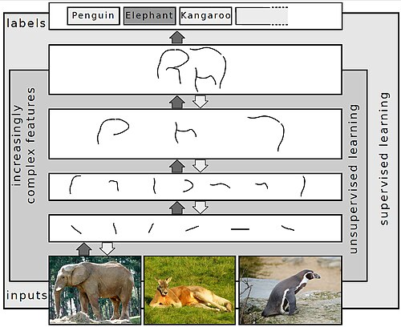

Deep learning


| Part of a series on |
| Artificial intelligence (AI) |
|---|
| Glossary |
In machine learning, deep learning (DL) focuses on utilizing multilayered neural networks to perform tasks such as classification, regression, and representation learning. The field takes inspiration from biological neuroscience and revolves around stacking artificial neurons into layers and "training" them to process data. The adjective "deep" refers to the use of multiple layers (ranging from three to several hundred or thousands) in the network. Methods used can be supervised, semi-supervised or unsupervised.[2]
Some common deep learning network architectures include fully connected networks, deep belief networks, recurrent neural networks, recurrent Random neural networks, convolutional neural networks, generative adversarial networks, transformers, and neural radiance fields. These architectures have been applied to fields including computer vision, speech recognition, natural language processing, machine translation, bioinformatics, drug design, medical image analysis, climate science, material inspection and board game programs, where they have produced results comparable to and in some cases surpassing human expert performance.[3][4][5]
Early forms of neural networks were inspired by information processing and distributed communication nodes in biological systems, particularly the human brain. However, current neural networks do not intend to model the brain function of organisms, and are generally seen as low-quality models for that purpose.[6]
Overview
[edit]Most modern deep learning models are based on multi-layered neural networks such as convolutional neural networks and transformers, although they can also include propositional formulas or latent variables organized layer-wise in deep generative models such as the nodes in deep belief networks and deep Boltzmann machines.[7]
Fundamentally, deep learning refers to a class of machine learning algorithms in which a hierarchy of layers is used to transform input data into a progressively more abstract and composite representation. For example, in an image recognition model, the raw input may be an image (represented as a tensor of pixels). The first representational layer may attempt to identify basic shapes such as lines and circles, the second layer may compose and encode arrangements of edges, the third layer may encode a nose and eyes, and the fourth layer may recognize that the image contains a face.
Importantly, a deep learning process can learn which features to optimally place at which level on its own. Prior to deep learning, machine learning techniques often involved hand-crafted feature engineering to transform the data into a more suitable representation for a classification algorithm to operate on. In the deep learning approach, features are not hand-crafted and the model discovers useful feature representations from the data automatically. This does not eliminate the need for hand-tuning; for example, varying numbers of layers and layer sizes can provide different degrees of abstraction.[8][2]
The word "deep" in "deep learning" refers to the number of layers through which the data is transformed. More precisely, deep learning systems have a substantial credit assignment path (CAP) depth. The CAP is the chain of transformations from input to output. CAPs describe potentially causal connections between input and output. For a feedforward neural network, the depth of the CAPs is that of the network and is the number of hidden layers plus one (as the output layer is also parameterized). For recurrent neural networks, in which a signal may propagate through a layer more than once, the CAP depth is potentially unlimited.[9] No universally agreed-upon threshold of depth divides shallow learning from deep learning, but most researchers agree that deep learning involves CAP depth higher than two. CAP of depth two has been shown to be a universal approximator in the sense that it can emulate any function.[10][citation needed] Beyond that, more layers do not add to the function approximator ability of the network. Deep models (CAP > two) are able to extract better features than shallow models and hence, extra layers help in learning the features effectively.
Deep learning architectures can be constructed with a greedy layer-by-layer method.[11] Deep learning helps to disentangle these abstractions and pick out which features improve performance.[8]
Deep learning algorithms can be applied to unsupervised learning tasks. This is an important benefit because unlabeled data is more abundant than labeled data. Examples of deep structures that can be trained in an unsupervised manner are deep belief networks.[8][12]
The term deep learning was introduced to the machine learning community by Rina Dechter in 1986,[13] and to artificial neural networks by Igor Aizenberg and colleagues in 2000, in the context of Boolean threshold neurons.[14][15] The etymology of the term is more complicated.[16]
Interpretations
[edit]Deep neural networks are generally interpreted in terms of the universal approximation theorem[17][18][19][20][21] or probabilistic inference.[22][23][8][9][24]
The classic universal approximation theorem concerns the capacity of feedforward neural networks with a single hidden layer of finite size to approximate continuous functions.[17][18][19][20] In 1989, the first proof was published by George Cybenko for sigmoid activation functions[17] and was generalised to feed-forward multi-layer architectures in 1991 by Kurt Hornik.[18] Recent work also showed that universal approximation also holds for non-bounded activation functions such as Kunihiko Fukushima's rectified linear unit.[25][26]. In [27] it was shown that the Random neural network is also a universal approximator for continuous and bounded functions.
The universal approximation theorem for deep neural networks concerns the capacity of networks with bounded width but the depth is allowed to grow. Lu et al.[21] proved that if the width of a deep neural network with ReLU activation is strictly larger than the input dimension, then the network can approximate any Lebesgue integrable function; if the width is smaller or equal to the input dimension, then a deep neural network is not a universal approximator.
The probabilistic interpretation[24] derives from the field of machine learning. It features inference,[23][7][8][9][12][24] as well as the optimization concepts of training and testing, related to fitting and generalization, respectively. More specifically, the probabilistic interpretation considers the activation nonlinearity as a cumulative distribution function.[24] The probabilistic interpretation led to the introduction of dropout as regularizer in neural networks. The probabilistic interpretation was introduced by researchers including Hopfield, Widrow and Narendra and popularized in surveys such as the one by Bishop.[28]
History
[edit]Before 1980
[edit]There are two types of artificial neural network (ANN): feedforward neural network (FNN) or multilayer perceptron (MLP) and recurrent neural networks (RNN). RNNs have cycles in their connectivity structure, whereas FNNs do not. In the 1920s, Wilhelm Lenz and Ernst Ising created the Ising model[29][30] which is essentially a non-learning RNN architecture consisting of neuron-like threshold elements. In 1972, Shun'ichi Amari made this architecture adaptive.[31][32] His learning RNN was republished by John Hopfield in 1982.[33] Other early recurrent neural networks were published by Kaoru Nakano in 1971.[34][35] Already in 1948, Alan Turing produced work on "Intelligent Machinery" that was not published in his lifetime,[36] containing "ideas related to artificial evolution and learning RNNs".[32]
Frank Rosenblatt (1958)[37] proposed the perceptron, an MLP with 3 layers: an input layer, a hidden layer with randomized weights that did not learn, and an output layer. He later published a 1962 book that also introduced variants and computer experiments, including a version with four-layer perceptrons "with adaptive preterminal networks" where the last two layers have learned weights (here he credits H. D. Block and B. W. Knight).[38]: section 16 The book cites an earlier network by R. D. Joseph (1960)[39] "functionally equivalent to a variation of" this four-layer system (the book mentions Joseph over 30 times). Should Joseph therefore be considered the originator of proper adaptive multilayer perceptrons with learning hidden units? Unfortunately, the learning algorithm was not a functional one, and fell into oblivion.
The first working deep learning algorithm was the Group method of data handling, a method to train arbitrarily deep neural networks, published by Alexey Ivakhnenko and Lapa in 1965. They regarded it as a form of polynomial regression,[40] or a generalization of Rosenblatt's perceptron to handle more complex, nonlinear, and hierarchical relationships.[41] A 1971 paper described a deep network with eight layers trained by this method,[42] which is based on layer by layer training through regression analysis. Superfluous hidden units are pruned using a separate validation set. Since the activation functions of the nodes are Kolmogorov-Gabor polynomials, these were also the first deep networks with multiplicative units or "gates".[32]
The first deep learning multilayer perceptron trained by stochastic gradient descent[43] was published in 1967 by Shun'ichi Amari.[44] In computer experiments conducted by Amari's student Saito, a five layer MLP with two modifiable layers learned internal representations to classify non-linearily separable pattern classes.[32] Subsequent developments in hardware and hyperparameter tunings have made end-to-end stochastic gradient descent the currently dominant training technique.
In 1969, Kunihiko Fukushima introduced the ReLU (rectified linear unit) activation function.[25][32] The rectifier has become the most popular activation function for deep learning.[45]
Deep learning architectures for convolutional neural networks (CNNs) with convolutional layers and downsampling layers began with the Neocognitron introduced by Kunihiko Fukushima in 1979, though not trained by backpropagation.[46][47]
Backpropagation is an efficient application of the chain rule to networks of differentiable nodes. The terminology "back-propagating errors" was actually introduced in 1962 by Rosenblatt,[38] but he did not know how to implement this, although Henry J. Kelley had a continuous precursor of backpropagation in 1960 in the context of control theory.[48] The modern form of backpropagation was first published in Seppo Linnainmaa's master thesis (1970).[49][50][32] G.M. Ostrovski et al. republished it in 1971.[51][52] Paul Werbos applied backpropagation to neural networks in 1982[53] (his 1974 PhD thesis, reprinted in a 1994 book,[54] did not yet describe the algorithm[52]). In 1986, David E. Rumelhart et al. popularised backpropagation but did not cite the original work.[55][56]
1980s-2000s
[edit]The time delay neural network (TDNN) was introduced in 1987 by Alex Waibel to apply CNN to phoneme recognition. It used convolutions, weight sharing, and backpropagation.[57][58] In 1988, Wei Zhang applied a backpropagation-trained CNN to alphabet recognition.[59] In 1989, Yann LeCun et al. created a CNN called LeNet for recognizing handwritten ZIP codes on mail. Training required 3 days.[60] In 1990, Wei Zhang implemented a CNN on optical computing hardware.[61] In 1991, a CNN was applied to medical image object segmentation[62] and breast cancer detection in mammograms.[63] LeNet-5 (1998), a 7-level CNN by Yann LeCun et al., that classifies digits, was applied by several banks to recognize hand-written numbers on checks digitized in 32x32 pixel images.[64]
Recurrent neural networks (RNN)[29][31] were further developed in the 1980s. Recurrence is used for sequence processing, and when a recurrent network is unrolled, it mathematically resembles a deep feedforward layer. Consequently, they have similar properties and issues, and their developments had mutual influences. In RNN, two early influential works were the Jordan network (1986)[65], the Elman network (1990),[66] which applied RNN to study problems in cognitive psychology.
The recurrent Random neural network introduced by Erol Gelenbe (1989) was inspired by the stochastic spiking behaviour of mammalian brain neurons, and [67] [68]. It was proved to have a convergent stable state that allowed the development of a simple deep learning gradient algorithm for this recurrent network [69]. It has had numerous applications, including for brain tumor detection from MR images using texture-based segmentation [70] and real-time video compression [71]. Gelenbe also developed its reinforcement learning algorithm, allowing the Random neural network to be used effectively for packet network routing that is interoperable and compatible with the existing Internet protocol [72] [73]. In recent years, new developments of the Random neural network that have large and dense clusters of recurrent neurons with Deep Learning, have resulted in highly accurate algorithms for cyberattack detection and mitigation [74] [75], as well as for the real-time control of smart homes.
In the 1980s, backpropagation did not work well for deep learning with long credit assignment paths. To overcome this problem, in 1991, Jürgen Schmidhuber proposed a hierarchy of RNNs pre-trained one level at a time by self-supervised learning where each RNN tries to predict its own next input, which is the next unexpected input of the RNN below.[76][77] This "neural history compressor" uses predictive coding to learn internal representations at multiple self-organizing time scales. This can substantially facilitate downstream deep learning. The RNN hierarchy can be collapsed into a single RNN, by distilling a higher level chunker network into a lower level automatizer network.[76][77][32] In 1993, a neural history compressor solved a "Very Deep Learning" task that required more than 1000 subsequent layers in an RNN unfolded in time.[78] The "P" in ChatGPT refers to such pre-training.
Sepp Hochreiter's diploma thesis (1991)[79] implemented the neural history compressor,[76] and identified and analyzed the vanishing gradient problem.[79][80] Hochreiter proposed recurrent residual connections to solve the vanishing gradient problem. This led to the long short-term memory (LSTM), published in 1995.[81] LSTM can learn "very deep learning" tasks[9] with long credit assignment paths that require memories of events that happened thousands of discrete time steps before. That LSTM was not yet the modern architecture, which required a "forget gate", introduced in 1999,[82] which became the standard RNN architecture.
In 1991, Jürgen Schmidhuber also published adversarial neural networks that contest with each other in the form of a zero-sum game, where one network's gain is the other network's loss.[83][84] The first network is a generative model that models a probability distribution over output patterns. The second network learns by gradient descent to predict the reactions of the environment to these patterns. This was called "artificial curiosity". In 2014, this principle was used in generative adversarial networks (GANs).[85]
During 1985–1995, inspired by statistical mechanics, several architectures and methods were developed by Terry Sejnowski, Peter Dayan, Geoffrey Hinton, etc., including the Boltzmann machine,[86] restricted Boltzmann machine,[87] Helmholtz machine,[88] and the wake-sleep algorithm.[89] These were designed for unsupervised learning of deep generative models. However, those were more computationally expensive compared to backpropagation. Boltzmann machine learning algorithm, published in 1985, was briefly popular before being eclipsed by the backpropagation algorithm in 1986. (p. 112 [90]). A 1988 network became state of the art in protein structure prediction, an early application of deep learning to bioinformatics.[91]
Both shallow and deep learning (e.g., recurrent nets) of ANNs for speech recognition have been explored for many years.[92][93][94] These methods never outperformed non-uniform internal-handcrafting Gaussian mixture model/Hidden Markov model (GMM-HMM) technology based on generative models of speech trained discriminatively.[95] Key difficulties have been analyzed, including gradient diminishing[79] and weak temporal correlation structure in neural predictive models.[96][97] Additional difficulties were the lack of training data and limited computing power.
Most speech recognition researchers moved away from neural nets to pursue generative modeling. An exception was at SRI International in the late 1990s. Funded by the US government's NSA and DARPA, SRI researched in speech and speaker recognition. The speaker recognition team led by Larry Heck reported significant success with deep neural networks in speech processing in the 1998 NIST Speaker Recognition benchmark.[98][99] It was deployed in the Nuance Verifier, representing the first major industrial application of deep learning.[100]
The principle of elevating "raw" features over hand-crafted optimization was first explored successfully in the architecture of deep autoencoder on the "raw" spectrogram or linear filter-bank features in the late 1990s,[99] showing its superiority over the Mel-Cepstral features that contain stages of fixed transformation from spectrograms. The raw features of speech, waveforms, later produced excellent larger-scale results.[101]
2000s
[edit]Neural networks entered a lull, and simpler models that use task-specific handcrafted features such as Gabor filters and support vector machines (SVMs) became the preferred choices in the 1990s and 2000s, because of artificial neural networks' computational cost and a lack of understanding of how the brain wires its biological networks.[citation needed]
In 2003, LSTM became competitive with traditional speech recognizers on certain tasks.[102] In 2006, Alex Graves, Santiago Fernández, Faustino Gomez, and Schmidhuber combined it with connectionist temporal classification (CTC)[103] in stacks of LSTMs.[104] In 2009, it became the first RNN to win a pattern recognition contest, in connected handwriting recognition.[105][9]
In 2006, publications by Geoff Hinton, Ruslan Salakhutdinov, Osindero and Teh[106][107] deep belief networks were developed for generative modeling. They are trained by training one restricted Boltzmann machine, then freezing it and training another one on top of the first one, and so on, then optionally fine-tuned using supervised backpropagation.[106] They could model high-dimensional probability distributions, such as the distribution of MNIST images, but convergence was slow.[106][108][109]
The impact of deep learning in industry began in the early 2000s, when CNNs already processed an estimated 10% to 20% of all the checks written in the US, according to Yann LeCun.[110] Industrial applications of deep learning to large-scale speech recognition started around 2010.
The 2009 NIPS Workshop on Deep Learning for Speech Recognition was motivated by the limitations of deep generative models of speech, and the possibility that given more capable hardware and large-scale data sets that deep neural nets might become practical. It was believed that pre-training DNNs using generative models of deep belief nets (DBN) would overcome the main difficulties of neural nets. However, it was discovered that replacing pre-training with large amounts of training data for straightforward backpropagation when using DNNs with large, context-dependent output layers produced error rates dramatically lower than then-state-of-the-art Gaussian mixture model (GMM)/Hidden Markov Model (HMM) and also than more-advanced generative model-based systems.[111] The nature of the recognition errors produced by the two types of systems was characteristically different,[112] offering technical insights into how to integrate deep learning into the existing highly efficient, run-time speech decoding system deployed by all major speech recognition systems.[23][113][114] Analysis around 2009–2010, contrasting the GMM (and other generative speech models) vs. DNN models, stimulated early industrial investment in deep learning for speech recognition.[112] That analysis was done with comparable performance (less than 1.5% in error rate) between discriminative DNNs and generative models.[111][112][115] In 2010, researchers extended deep learning from TIMIT to large vocabulary speech recognition, by adopting large output layers of the DNN based on context-dependent HMM states constructed by decision trees.[116][117][118][113]
Deep learning revolution
[edit]
The period of significant growth in both the adoption and performance of deep learning in the 2010s was driven by the emergence of efficient implementations of CNNs on GPU hardware.
Although CNNs trained by backpropagation had been around for decades and GPU implementations of NNs for years,[119] including CNNs,[120] faster implementations of CNNs on GPUs were needed to progress on computer vision. Later, as deep learning becomes widespread, specialized hardware and algorithm optimizations were developed specifically for deep learning.[121]
A key advance for the deep learning revolution was hardware advances, especially GPU. Some early work dated back to 2004.[119][120] In 2009, Raina, Madhavan, and Andrew Ng reported a 100M deep belief network trained on 30 Nvidia GeForce GTX 280 GPUs, an early demonstration of GPU-based deep learning. They reported up to 70 times faster training.[122]
In 2011, a CNN named DanNet[123][124] by Dan Ciresan, Ueli Meier, Jonathan Masci, Luca Maria Gambardella, and Jürgen Schmidhuber achieved for the first time superhuman performance in a visual pattern recognition contest, outperforming traditional methods by a factor of 3.[9] It then won more contests.[125][126] They also showed how max-pooling CNNs on GPU improved performance significantly.[3]
In 2012, Andrew Ng and Jeff Dean created an FNN that learned to recognize higher-level concepts, such as cats, only from watching unlabeled images taken from YouTube videos.[127]
In October 2012, AlexNet by Alex Krizhevsky, Ilya Sutskever, and Geoffrey Hinton[4] won the large-scale ImageNet competition by a significant margin over shallow machine learning methods. Further incremental improvements included the VGG-16 network by Karen Simonyan and Andrew Zisserman[128] and Google's Inceptionv3.[129]
In 2013, Tomáš Mikolov and colleagues developed word2vec, a method for efficiently learning word embeddings from large text corpora.[130] The resulting vector representations were shown to capture syntactic and semantic relationships between words. A subsequent paper introduced negative sampling as an efficient method for training such models.[131]
The success in image classification was then extended to the more challenging task of generating descriptions (captions) for images, often as a combination of CNNs and LSTMs.[132][133][134]
In 2014, the state of the art was training a "very deep neural network" with 20 to 30 layers.[135] Stacking too many layers led to a steep reduction in training accuracy,[136] known as the "degradation" problem.[137] In 2015, two techniques were developed to train very deep networks: the highway network was published in May 2015, and the residual neural network (ResNet)[137] in Dec 2015. ResNet behaves like an open-gated Highway Net.
Around the same time, deep learning started impacting the field of art. Early examples included Google DeepDream (2015), and neural style transfer (2015),[138] both of which were based on pretrained image classification neural networks, such as VGG-19.
Generative adversarial network (GAN) by (Ian Goodfellow et al., 2014)[139] (based on Jürgen Schmidhuber's principle of artificial curiosity[83][85]) became state of the art in generative modeling during 2014-2018 period. Excellent image quality is achieved by Nvidia's StyleGAN (2018)[140] based on the Progressive GAN by Tero Karras et al.[141] Here the GAN generator is grown from small to large scale in a pyramidal fashion. Image generation by GAN reached popular success, and provoked discussions concerning deepfakes.[142] Diffusion models (2015)[143] eclipsed GANs in generative modeling since then, with systems such as DALL·E 2 (2022) and Stable Diffusion (2022).
In 2015, Google's speech recognition improved by 49% by an LSTM-based model, which they made available through Google Voice Search on smartphone.[144][145]
Deep learning is part of state-of-the-art systems in various disciplines, particularly computer vision and automatic speech recognition (ASR). Results on commonly used evaluation sets such as TIMIT (ASR) and MNIST (image classification), as well as a range of large-vocabulary speech recognition tasks have steadily improved.[111][146] Convolutional neural networks were superseded for ASR by LSTM.[145][147][148][149] but are more successful in computer vision.
Yoshua Bengio, Geoffrey Hinton and Yann LeCun were awarded the 2018 Turing Award for "conceptual and engineering breakthroughs that have made deep neural networks a critical component of computing".[150]
Neural networks
[edit]

In reality, textures and outlines would not be represented by single nodes, but rather by associated weight patterns of multiple nodes.
Artificial neural networks (ANNs) or connectionist systems are computing systems inspired by the biological neural networks that constitute animal brains. Such systems learn (progressively improve their ability) to do tasks by considering examples, generally without task-specific programming. For example, in image recognition, they might learn to identify images that contain cats by analyzing example images that have been manually labeled as "cat" or "no cat" and using the analytic results to identify cats in other images. They have found most use in applications difficult to express with a traditional computer algorithm using rule-based programming.
An ANN is based on a collection of connected units called artificial neurons, (analogous to biological neurons in a biological brain). Each connection (synapse) between neurons can transmit a signal to another neuron. The receiving (postsynaptic) neuron can process the signal(s) and then signal downstream neurons connected to it. Neurons may have state, generally represented by real numbers, typically between 0 and 1. Neurons and synapses may also have a weight that varies as learning proceeds, which can increase or decrease the strength of the signal that it sends downstream.
Typically, neurons are organized in layers. Different layers may perform different kinds of transformations on their inputs. Signals travel from the first (input), to the last (output) layer, possibly after traversing the layers multiple times.
The original goal of the neural network approach was to solve problems in the same way that a human brain would. Over time, attention focused on matching specific mental abilities, leading to deviations from biology such as backpropagation, or passing information in the reverse direction and adjusting the network to reflect that information.
Neural networks have been used on a variety of tasks, including computer vision, speech recognition, machine translation, social network filtering, playing board and video games and medical diagnosis.
As of 2017, neural networks typically have a few thousand to a few million units and millions of connections. Despite this number being several order of magnitude less than the number of neurons on a human brain, these networks can perform many tasks at a level beyond that of humans (e.g., recognizing faces, or playing "Go"[152]).
Deep neural networks
[edit]A deep neural network (DNN) is an artificial neural network with multiple layers between the input and output layers.[7][9] There are different types of neural networks but they always consist of the same components: neurons, synapses, weights, biases, and functions.[153] These components as a whole function in a way that mimics functions of the human brain, and can be trained like any other ML algorithm.[citation needed]
For example, a DNN that is trained to recognize dog breeds will go over the given image and calculate the probability that the dog in the image is a certain breed. The user can review the results and select which probabilities the network should display (above a certain threshold, etc.) and return the proposed label. Each mathematical manipulation as such is considered a layer,[154] and complex DNN have many layers, hence the name "deep" networks.
DNNs can model complex non-linear relationships. DNN architectures generate compositional models where the object is expressed as a layered composition of primitives.[155] The extra layers enable composition of features from lower layers, potentially modeling complex data with fewer units than a similarly performing shallow network.[7] For instance, it was proved that sparse multivariate polynomials are exponentially easier to approximate with DNNs than with shallow networks.[156]
Deep architectures include many variants of a few basic approaches. Each architecture has found success in specific domains. It is not always possible to compare the performance of multiple architectures, unless they have been evaluated on the same data sets.[154]
DNNs are typically feedforward networks in which data flows from the input layer to the output layer without looping back. At first, the DNN creates a map of virtual neurons and assigns random numerical values, or "weights", to connections between them. The weights and inputs are multiplied and return an output between 0 and 1. If the network did not accurately recognize a particular pattern, an algorithm would adjust the weights.[157] That way the algorithm can make certain parameters more influential, until it determines the correct mathematical manipulation to fully process the data.
Recurrent neural networks, in which data can flow in any direction, are used for applications such as language modeling.[158][159][160][161][162] Long short-term memory is particularly effective for this use.[163][164]
Convolutional neural networks (CNNs) are used in computer vision.[165] CNNs also have been applied to acoustic modeling for automatic speech recognition (ASR).[166]
Challenges
[edit]As with ANNs, many issues can arise with naively trained DNNs. Two common issues are overfitting and computation time.
DNNs are prone to overfitting because of the added layers of abstraction, which allow them to model rare dependencies in the training data. Regularization methods such as Ivakhnenko's unit pruning[42] or weight decay (-regularization) or sparsity (-regularization) can be applied during training to combat overfitting.[167] Alternatively dropout regularization randomly omits units from the hidden layers during training. This helps to exclude rare dependencies.[168] Another interesting recent development is research into models of just enough complexity through an estimation of the intrinsic complexity of the task being modelled. This approach has been successfully applied for multivariate time series prediction tasks such as traffic prediction.[169] Finally, data can be augmented via methods such as cropping and rotating such that smaller training sets can be increased in size to reduce the chances of overfitting.[170]
DNNs must consider many training parameters, such as the size (number of layers and number of units per layer), the learning rate, and initial weights. Sweeping through the parameter space for optimal parameters may not be feasible due to the cost in time and computational resources. Various tricks, such as batching (computing the gradient on several training examples at once rather than individual examples)[171] speed up computation. Large processing capabilities of many-core architectures (such as GPUs or the Intel Xeon Phi) have produced significant speedups in training, because of the suitability of such processing architectures for the matrix and vector computations.[172][173]
Alternatively, engineers may look for other types of neural networks with more straightforward and convergent training algorithms. CMAC (cerebellar model articulation controller) is one such kind of neural network. It doesn't require learning rates or randomized initial weights. The training process can be guaranteed to converge in one step with a new batch of data, and the computational complexity of the training algorithm is linear with respect to the number of neurons involved.[174][175]
Hardware
[edit]Since the 2010s, advances in both machine learning algorithms and computer hardware have led to more efficient methods for training deep neural networks that contain many layers of non-linear hidden units and a very large output layer.[176] By 2019, graphics processing units (GPUs), often with AI-specific enhancements, had displaced CPUs as the dominant method for training large-scale commercial cloud AI .[177] OpenAI estimated the hardware computation used in the largest deep learning projects from AlexNet (2012) to AlphaZero (2017) and found a 300,000-fold increase in the amount of computation required, with a doubling-time trendline of 3.4 months.[178][179]
Special electronic circuits called deep learning processors were designed to speed up deep learning algorithms. Deep learning processors include neural processing units (NPUs) in Huawei cellphones[180] and cloud computing servers such as tensor processing units (TPU) in the Google Cloud Platform.[181] Cerebras Systems has also built a dedicated system to handle large deep learning models, the CS-2, based on the largest processor in the industry, the second-generation Wafer Scale Engine (WSE-2).[182][183]
Atomically thin semiconductors are considered promising for energy-efficient deep learning hardware where the same basic device structure is used for both logic operations and data storage. In 2020, Marega et al. published experiments with a large-area active channel material for developing logic-in-memory devices and circuits based on floating-gate field-effect transistors (FGFETs).[184]
In 2021, J. Feldmann et al. proposed an integrated photonic hardware accelerator for parallel convolutional processing.[185] The authors identify two key advantages of integrated photonics over its electronic counterparts: (1) massively parallel data transfer through wavelength division multiplexing in conjunction with frequency combs, and (2) extremely high data modulation speeds.[185] Their system can execute trillions of multiply-accumulate operations per second, indicating the potential of integrated photonics in data-heavy AI applications.[185]
Applications
[edit]Automatic speech recognition
[edit]Large-scale automatic speech recognition is the first and most convincing successful case of deep learning. LSTM RNNs can learn "Very Deep Learning" tasks[9] that involve multi-second intervals containing speech events separated by thousands of discrete time steps, where one time step corresponds to about 10 ms. LSTM with forget gates[164] is competitive with traditional speech recognizers on certain tasks.[102]
The initial success in speech recognition was based on small-scale recognition tasks based on TIMIT. The data set contains 630 speakers from eight major dialects of American English, where each speaker reads 10 sentences.[186] Its small size lets many configurations be tried. More importantly, the TIMIT task concerns phone-sequence recognition, which, unlike word-sequence recognition, allows weak phone bigram language models. This lets the strength of the acoustic modeling aspects of speech recognition be more easily analyzed. The error rates listed below, including these early results and measured as percent phone error rates (PER), have been summarized since 1991.
| Method | Percent phone error rate (PER) (%) |
|---|---|
| Randomly Initialized RNN[187] | 26.1 |
| Bayesian Triphone GMM-HMM | 25.6 |
| Hidden Trajectory (Generative) Model | 24.8 |
| Monophone Randomly Initialized DNN | 23.4 |
| Monophone DBN-DNN | 22.4 |
| Triphone GMM-HMM with BMMI Training | 21.7 |
| Monophone DBN-DNN on fbank | 20.7 |
| Convolutional DNN[188] | 20.0 |
| Convolutional DNN w. Heterogeneous Pooling | 18.7 |
| Ensemble DNN/CNN/RNN[189] | 18.3 |
| Bidirectional LSTM | 17.8 |
| Hierarchical Convolutional Deep Maxout Network[190] | 16.5 |
The debut of DNNs for speaker recognition in the late 1990s and speech recognition around 2009-2011 and of LSTM around 2003–2007, accelerated progress in eight major areas:[23][115][113]
- Scale-up/out and accelerated DNN training and decoding
- Sequence discriminative training
- Feature processing by deep models with solid understanding of the underlying mechanisms
- Adaptation of DNNs and related deep models
- Multi-task and transfer learning by DNNs and related deep models
- CNNs and how to design them to best exploit domain knowledge of speech
- RNN and its rich LSTM variants
- Other types of deep models including tensor-based models and integrated deep generative/discriminative models.
More recent speech recognition models use Transformers or Temporal Convolution Networks with significant success and widespread applications.[191][192][193] All major commercial speech recognition systems (e.g., Microsoft Cortana, Xbox, Skype Translator, Amazon Alexa, Google Now, Apple Siri, Baidu and iFlyTek voice search, and a range of Nuance speech products, etc.) are based on deep learning.[23][194][195]
Image recognition
[edit]A common evaluation set for image classification is the MNIST database data set. MNIST is composed of handwritten digits and includes 60,000 training examples and 10,000 test examples. As with TIMIT, its small size lets users test multiple configurations. A comprehensive list of results on this set is available.[196]
Deep learning-based image recognition has become "superhuman", producing more accurate results than human contestants. This first occurred in 2011 in recognition of traffic signs, and in 2014, with recognition of human faces.[197][198]
Deep learning-trained vehicles now interpret 360° camera views.[199] Another example is Facial Dysmorphology Novel Analysis (FDNA) used to analyze cases of human malformation connected to a large database of genetic syndromes.
Visual art processing
[edit]
Closely related to the progress that has been made in image recognition is the increasing application of deep learning techniques to various visual art tasks. DNNs have proven themselves capable, for example, of
Natural language processing
[edit]Neural networks have been used for implementing language models since the early 2000s.[158] LSTM helped to improve machine translation and language modeling.[159][160][161]
Other key techniques in this field are negative sampling[202] and word embedding. Word embedding, such as word2vec, can be thought of as a representational layer in a deep learning architecture that transforms an atomic word into a positional representation of the word relative to other words in the dataset; the position is represented as a point in a vector space. Using word embedding as an RNN input layer allows the network to parse sentences and phrases using an effective compositional vector grammar. A compositional vector grammar can be thought of as probabilistic context free grammar (PCFG) implemented by an RNN.[203] Recursive auto-encoders built atop word embeddings can assess sentence similarity and detect paraphrasing.[203] Deep neural architectures provide the best results for constituency parsing,[204] sentiment analysis,[205] information retrieval,[206][207] spoken language understanding,[208] machine translation,[159][209] contextual entity linking,[209] writing style recognition,[210] named-entity recognition (token classification),[211] text classification, and others.[212]
Recent developments generalize word embedding to sentence embedding.
Google Translate (GT) uses a large end-to-end long short-term memory (LSTM) network.[213][214][215][216] Google Neural Machine Translation (GNMT) uses an example-based machine translation method in which the system "learns from millions of examples".[214] It translates "whole sentences at a time, rather than pieces". Google Translate supports over one hundred languages.[214] The network encodes the "semantics of the sentence rather than simply memorizing phrase-to-phrase translations".[214][217] GT uses English as an intermediate between most language pairs.[217]
Drug discovery and toxicology
[edit]A large percentage of candidate drugs fail to win regulatory approval. These failures are caused by insufficient efficacy (on-target effect), undesired interactions (off-target effects), or unanticipated toxic effects.[218][219] Research has explored use of deep learning to predict the biomolecular targets,[220][221] off-targets, and toxic effects of environmental chemicals in nutrients, household products and drugs.[222][223][224]
AtomNet is a deep learning system for structure-based rational drug design.[225] AtomNet was used to predict novel candidate biomolecules for disease targets such as the Ebola virus[226] and multiple sclerosis.[227][226]
In 2017 graph neural networks were used for the first time to predict various properties of molecules in a large toxicology data set.[228] In 2019, generative neural networks were used to produce molecules that were validated experimentally all the way into mice.[229][230]
Recommendation systems
[edit]Recommendation systems have used deep learning to extract meaningful features for a latent factor model for content-based music and journal recommendations.[231][232] Multi-view deep learning has been applied for learning user preferences from multiple domains.[233] The model uses a hybrid collaborative and content-based approach and enhances recommendations in multiple tasks.
Bioinformatics
[edit]An autoencoder ANN was used in bioinformatics, to predict gene ontology annotations and gene-function relationships.[234]
In medical informatics, deep learning was used to predict sleep quality based on data from wearables[235] and predictions of health complications from electronic health record data.[236]
Deep neural networks have shown unparalleled performance in predicting protein structure, according to the sequence of the amino acids that make it up. In 2020, AlphaFold, a deep-learning based system, achieved a level of accuracy significantly higher than all previous computational methods.[237][238]
Deep Neural Network Estimations
[edit]Deep neural networks can be used to estimate the entropy of a stochastic process through an arrangement called a Neural Joint Entropy Estimator (NJEE).[239] Such an estimation provides insights on the effects of input random variables on an independent random variable. Practically, the DNN is trained as a classifier that maps an input vector or matrix X to an output probability distribution over the possible classes of random variable Y, given input X. For example, in image classification tasks, the NJEE maps a vector of pixels' color values to probabilities over possible image classes. In practice, the probability distribution of Y is obtained by a Softmax layer with number of nodes that is equal to the alphabet size of Y. NJEE uses continuously differentiable activation functions, such that the conditions for the universal approximation theorem holds. It is shown that this method provides a strongly consistent estimator and outperforms other methods in cases of large alphabet sizes.[239]
Medical image analysis
[edit]Deep learning has been shown to produce competitive results in medical applications such as cancer cell classification, lesion detection, organ segmentation and image enhancement.[240][241] Modern deep learning tools demonstrate the high accuracy of detecting various diseases and the helpfulness of their use by specialists to improve the diagnosis efficiency.[242][243]
Mobile advertising
[edit]Finding the appropriate mobile audience for mobile advertising is always challenging, since many data points must be considered and analyzed before a target segment can be created and used in ad serving by any ad server.[244] Deep learning has been used to interpret large, many-dimensioned advertising datasets. Many data points are collected during the request/serve/click internet advertising cycle. This information can form the basis of machine learning to improve ad selection.
Image restoration
[edit]Deep learning has been successfully applied to inverse problems such as denoising, super-resolution, inpainting, and film colorization.[245] These applications include learning methods such as "Shrinkage Fields for Effective Image Restoration"[246] which trains on an image dataset, and Deep Image Prior, which trains on the image that needs restoration.
Financial fraud detection
[edit]Deep learning is being applied to financial fraud detection, tax evasion detection,[247] and anti-money laundering.[248]
Materials science
[edit]In November 2023, researchers at Google DeepMind and Lawrence Berkeley National Laboratory announced that they had developed an AI system known as GNoME. This system has contributed to materials science by discovering over 2 million new materials within a relatively short timeframe. GNoME employs deep learning techniques to efficiently explore potential material structures, achieving a significant increase in the identification of stable inorganic crystal structures. The system's predictions were validated through autonomous robotic experiments, demonstrating a noteworthy success rate of 71%. The data of newly discovered materials is publicly available through the Materials Project database, offering researchers the opportunity to identify materials with desired properties for various applications. This development has implications for the future of scientific discovery and the integration of AI in material science research, potentially expediting material innovation and reducing costs in product development. The use of AI and deep learning suggests the possibility of minimizing or eliminating manual lab experiments and allowing scientists to focus more on the design and analysis of unique compounds.[249][250][251]
Military
[edit]The United States Department of Defense applied deep learning to train robots in new tasks through observation.[252]
Partial differential equations
[edit]Physics-informed neural networks have been used to solve partial differential equations in both forward and inverse problems in a data driven manner.[253] One example is the reconstructing fluid flow governed by the Navier-Stokes equations. Using physics informed neural networks does not require the often expensive mesh generation that conventional CFD methods rely on.[254][255] It is evident that geometric and physical constraints have a synergistic effect on neural PDE surrogates, thereby enhancing their efficacy in predicting stable and super long rollouts.[256]
Deep backward stochastic differential equation method
[edit]Deep backward stochastic differential equation method is a numerical method that combines deep learning with Backward stochastic differential equation (BSDE). This method is particularly useful for solving high-dimensional problems in financial mathematics. By leveraging the powerful function approximation capabilities of deep neural networks, deep BSDE addresses the computational challenges faced by traditional numerical methods in high-dimensional settings. Specifically, traditional methods like finite difference methods or Monte Carlo simulations often struggle with the curse of dimensionality, where computational cost increases exponentially with the number of dimensions. Deep BSDE methods, however, employ deep neural networks to approximate solutions of high-dimensional partial differential equations (PDEs), effectively reducing the computational burden.[257]
In addition, the integration of Physics-informed neural networks (PINNs) into the deep BSDE framework enhances its capability by embedding the underlying physical laws directly into the neural network architecture. This ensures that the solutions not only fit the data but also adhere to the governing stochastic differential equations. PINNs leverage the power of deep learning while respecting the constraints imposed by the physical models, resulting in more accurate and reliable solutions for financial mathematics problems.
Image reconstruction
[edit]Image reconstruction is the reconstruction of the underlying images from the image-related measurements. Several works showed the better and superior performance of the deep learning methods compared to analytical methods for various applications, e.g., spectral imaging [258] and ultrasound imaging.[259]
Weather prediction
[edit]Traditional weather prediction systems typically solve a complex system of partial differential equations. GraphCast is a deep learning-based model trained on a long history of weather data to predict how weather patterns change over time. It can predict weather conditions for up to 10 days globally, at a very detailed level, and in under a minute, with precision similar to state of the art systems.[260][261]
Epigenetic clock
[edit]An epigenetic clock is a biochemical test that can be used to measure age. Galkin et al. used deep neural networks to train an epigenetic aging clock of unprecedented accuracy using >6,000 blood samples.[262] The clock uses information from 1000 CpG sites and predicts people with certain conditions older than healthy controls: IBD, frontotemporal dementia, ovarian cancer, obesity. The aging clock was planned to be released for public use in 2021 by an Insilico Medicine spinoff company Deep Longevity.
Relation to human cognitive and brain development
[edit]Deep learning is closely related to a class of theories of brain development (specifically, neocortical development) proposed by cognitive neuroscientists in the early 1990s.[263][264][265][266] These developmental theories were instantiated in computational models, making them predecessors of deep learning systems. These developmental models share the property that various proposed learning dynamics in the brain (e.g., a wave of nerve growth factor) support the self-organization somewhat analogous to the neural networks utilized in deep learning models. Like the neocortex, neural networks employ a hierarchy of layered filters in which each layer considers information from a prior layer (or the operating environment), and then passes its output (and possibly the original input), to other layers. This process yields a self-organizing stack of transducers, well-tuned to their operating environment. A 1995 description stated, "...the infant's brain seems to organize itself under the influence of waves of so-called trophic-factors ... different regions of the brain become connected sequentially, with one layer of tissue maturing before another and so on until the whole brain is mature".[267]
A variety of approaches have been used to investigate the plausibility of deep learning models from a neurobiological perspective. On the one hand, several variants of the backpropagation algorithm have been proposed in order to increase its processing realism.[268][269] Other researchers have argued that unsupervised forms of deep learning, such as those based on hierarchical generative models and deep belief networks, may be closer to biological reality.[270][271] In this respect, generative neural network models have been related to neurobiological evidence about sampling-based processing in the cerebral cortex.[272]
Although a systematic comparison between the human brain organization and the neuronal encoding in deep networks has not yet been established, several analogies have been reported. For example, the computations performed by deep learning units could be similar to those of actual neurons[273] and neural populations.[274] Similarly, the representations developed by deep learning models are similar to those measured in the primate visual system[275] both at the single-unit[276] and at the population[277] levels.
Commercial activity
[edit]Facebook's AI lab performs tasks such as automatically tagging uploaded pictures with the names of the people in them.[278]
Google's DeepMind Technologies developed a system capable of learning how to play Atari video games using only pixels as data input. In 2015 they demonstrated their AlphaGo system, which learned the game of Go well enough to beat a professional Go player.[279][280][281] Google Translate uses a neural network to translate between more than 100 languages.
In 2017, Covariant.ai was launched, which focuses on integrating deep learning into factories.[282]
As of 2008,[283] researchers at The University of Texas at Austin (UT) developed a machine learning framework called Training an Agent Manually via Evaluative Reinforcement, or TAMER, which proposed new methods for robots or computer programs to learn how to perform tasks by interacting with a human instructor.[252] First developed as TAMER, a new algorithm called Deep TAMER was later introduced in 2018 during a collaboration between U.S. Army Research Laboratory (ARL) and UT researchers. Deep TAMER used deep learning to provide a robot with the ability to learn new tasks through observation.[252] Using Deep TAMER, a robot learned a task with a human trainer, watching video streams or observing a human perform a task in-person. The robot later practiced the task with the help of some coaching from the trainer, who provided feedback such as "good job" and "bad job".[284]
Criticism and comment
[edit]Deep learning has attracted both criticism and comment, in some cases from outside the field of computer science.
Theory
[edit]A main criticism concerns the lack of theory surrounding some methods.[285] Learning in the most common deep architectures is implemented using well-understood gradient descent. However, the theory surrounding other algorithms, such as contrastive divergence is less clear.[citation needed] (e.g., Does it converge? If so, how fast? What is it approximating?) Deep learning methods are often looked at as a black box, with most confirmations done empirically, rather than theoretically.[286]
In further reference to the idea that artistic sensitivity might be inherent in relatively low levels of the cognitive hierarchy, a published series of graphic representations of the internal states of deep (20-30 layers) neural networks attempting to discern within essentially random data the images on which they were trained[287] demonstrate a visual appeal: the original research notice received well over 1,000 comments, and was the subject of what was for a time the most frequently accessed article on The Guardian's[288] website.
With the support of Innovation Diffusion Theory (IDT), a study analyzed the diffusion of deep learning in BRICS and OECD countries using data from Google Trends.[289]
Errors
[edit]Some deep learning architectures display problematic behaviors,[290] such as confidently classifying unrecognizable images as belonging to a familiar category of ordinary images (2014)[291] and misclassifying minuscule perturbations of correctly classified images (2013).[292] Goertzel hypothesized that these behaviors are due to limitations in their internal representations and that these limitations would inhibit integration into heterogeneous multi-component artificial general intelligence (AGI) architectures.[290] These issues may possibly be addressed by deep learning architectures that internally form states homologous to image-grammar[293] decompositions of observed entities and events.[290] Learning a grammar (visual or linguistic) from training data would be equivalent to restricting the system to commonsense reasoning that operates on concepts in terms of grammatical production rules and is a basic goal of both human language acquisition[294] and artificial intelligence (AI).[295]
Cyber threat
[edit]As deep learning moves from the lab into the world, research and experience show that artificial neural networks are vulnerable to hacks and deception.[296] By identifying patterns that these systems use to function, attackers can modify inputs to ANNs in such a way that the ANN finds a match that human observers would not recognize. For example, an attacker can make subtle changes to an image such that the ANN finds a match even though the image looks to a human nothing like the search target. Such manipulation is termed an "adversarial attack".[297]
In 2016 researchers used one ANN to doctor images in trial and error fashion, identify another's focal points, and thereby generate images that deceived it. The modified images looked no different to human eyes. Another group showed that printouts of doctored images then photographed successfully tricked an image classification system.[298] One defense is reverse image search, in which a possible fake image is submitted to a site such as TinEye that can then find other instances of it. A refinement is to search using only parts of the image, to identify images from which that piece may have been taken.[299]
Another group showed that certain psychedelic spectacles could fool a facial recognition system into thinking ordinary people were celebrities, potentially allowing one person to impersonate another. In 2017 researchers added stickers to stop signs and caused an ANN to misclassify them.[298]
ANNs can however be further trained to detect attempts at deception, potentially leading attackers and defenders into an arms race similar to the kind that already defines the malware defense industry. ANNs have been trained to defeat ANN-based anti-malware software by repeatedly attacking a defense with malware that was continually altered by a genetic algorithm until it tricked the anti-malware while retaining its ability to damage the target.[298]
In 2016, another group demonstrated that certain sounds could make the Google Now voice command system open a particular web address, and hypothesized that this could "serve as a stepping stone for further attacks (e.g., opening a web page hosting drive-by malware)".[298]
In "data poisoning", false data is continually smuggled into a machine learning system's training set to prevent it from achieving mastery.[298]
Data collection ethics
[edit]The deep learning systems that are trained using supervised learning often rely on data that is created or annotated by humans, or both.[300] It has been argued that not only low-paid clickwork (such as on Amazon Mechanical Turk) is regularly deployed for this purpose, but also implicit forms of human microwork that are often not recognized as such.[301] The philosopher Rainer Mühlhoff distinguishes five types of "machinic capture" of human microwork to generate training data: (1) gamification (the embedding of annotation or computation tasks in the flow of a game), (2) "trapping and tracking" (e.g. CAPTCHAs for image recognition or click-tracking on Google search results pages), (3) exploitation of social motivations (e.g. tagging faces on Facebook to obtain labeled facial images), (4) information mining (e.g. by leveraging quantified-self devices such as activity trackers) and (5) clickwork.[301]
See also
[edit]- Applications of artificial intelligence
- Comparison of deep learning software
- Compressed sensing
- Differentiable programming
- Echo state network
- List of artificial intelligence projects
- Liquid state machine
- List of datasets for machine-learning research
- Outline of deep learning
- Reservoir computing
- Scale space and deep learning
- Sparse coding
- Stochastic parrot
- Topological deep learning
References
[edit]- ↑ Schulz, Hannes; Behnke, Sven (November 2012). "Deep Learning: Layer-Wise Learning of Feature Hierarchies". KI - Künstliche Intelligenz. 26 (4): 357–363. doi:10.1007/s13218-012-0198-z.
- 1 2 LeCun, Yann; Bengio, Yoshua; Hinton, Geoffrey (2015). "Deep Learning". Nature. 521 (7553): 436–444. Bibcode:2015Natur.521..436L. doi:10.1038/nature14539. PMID 26017442.
- 1 2 Ciresan, D.; Meier, U.; Schmidhuber, J. (2012). "Multi-column deep neural networks for image classification". 2012 IEEE Conference on Computer Vision and Pattern Recognition. pp. 3642–3649. arXiv:1202.2745. doi:10.1109/cvpr.2012.6248110. ISBN 978-1-4673-1228-8.
- 1 2 Krizhevsky, Alex; Sutskever, Ilya; Hinton, Geoffrey E (2012). "ImageNet Classification with Deep Convolutional Neural Networks". Advances in Neural Information Processing Systems. 25.
- ↑ "Google's AlphaGo AI wins three-match series against the world's best Go player". TechCrunch. 25 May 2017. Archived from the original on 17 June 2018. Retrieved 17 June 2018.
- ↑ "Study urges caution when comparing neural networks to the brain". MIT News | Massachusetts Institute of Technology. 2022-11-02. Retrieved 2023-12-06.
- 1 2 3 4 Bengio, Y. (2009). "Learning Deep Architectures for AI". Foundations and Trends® in Machine Learning. 2 (1): 1–127. doi:10.1561/2200000006.
- 1 2 3 4 5 Bengio, Y.; Courville, A.; Vincent, P. (2013). "Representation Learning: A Review and New Perspectives". IEEE Transactions on Pattern Analysis and Machine Intelligence. 35 (8): 1798–1828. arXiv:1206.5538. Bibcode:2013ITPAM..35.1798B. doi:10.1109/tpami.2013.50. PMID 23787338.
- 1 2 3 4 5 6 7 8 Schmidhuber, J. (2015). "Deep Learning in Neural Networks: An Overview". Neural Networks. 61: 85–117. arXiv:1404.7828. Bibcode:2015NN.....61...85S. doi:10.1016/j.neunet.2014.09.003. PMID 25462637.
- ↑ Shigeki, Sugiyama (12 April 2019). Human Behavior and Another Kind in Consciousness: Emerging Research and Opportunities: Emerging Research and Opportunities. IGI Global. ISBN 978-1-5225-8218-2.
- ↑ Bengio, Yoshua; Lamblin, Pascal; Popovici, Dan; Larochelle, Hugo (2007). Greedy layer-wise training of deep networks (PDF). Advances in neural information processing systems. pp. 153–160. Archived (PDF) from the original on 2019-10-20. Retrieved 2019-10-06.
- 1 2 Hinton, G.E. (2009). "Deep belief networks". Scholarpedia. 4 (5): 5947. Bibcode:2009SchpJ...4.5947H. doi:10.4249/scholarpedia.5947.
- ↑ Rina Dechter (1986). Learning while searching in constraint-satisfaction problems. University of California, Computer Science Department, Cognitive Systems Laboratory.Online Archived 2016-04-19 at the Wayback Machine
- ↑ Aizenberg, Igor N.; Aizenberg, Naum N.; Vandewalle, Joos (2000). Multi-Valued and Universal Binary Neurons. doi:10.1007/978-1-4757-3115-6. ISBN 978-1-4419-4978-3.[page needed]
- ↑ Co-evolving recurrent neurons learn deep memory POMDPs. Proc. GECCO, Washington, D. C., pp. 1795–1802, ACM Press, New York, NY, USA, 2005.
- ↑ Fradkov, Alexander L. (2020-01-01). "Early History of Machine Learning". IFAC-PapersOnLine. 21st IFAC World Congress. 53 (2): 1385–1390. doi:10.1016/j.ifacol.2020.12.1888.
- 1 2 3 Cybenko, G. (December 1989). "Approximation by superpositions of a sigmoidal function". Mathematics of Control, Signals, and Systems. 2 (4): 303–314. Bibcode:1989MCSS....2..303C. doi:10.1007/bf02551274.
- 1 2 3 Hornik, Kurt (1991). "Approximation Capabilities of Multilayer Feedforward Networks". Neural Networks. 4 (2): 251–257. Bibcode:1991NN......4..251H. doi:10.1016/0893-6080(91)90009-t.
- 1 2 Haykin, Simon S. (1999). Neural Networks: A Comprehensive Foundation. Prentice Hall. ISBN 978-0-13-273350-2.
- 1 2 Hassoun, Mohamad H. (1995). Fundamentals of Artificial Neural Networks. MIT Press. p. 48. ISBN 978-0-262-08239-6.
- 1 2 Lu, Z., Pu, H., Wang, F., Hu, Z., & Wang, L. (2017). The Expressive Power of Neural Networks: A View from the Width Archived 2019-02-13 at the Wayback Machine. Neural Information Processing Systems, 6231-6239.
- ↑ Orhan, A. E.; Ma, W. J. (2017). "Efficient probabilistic inference in generic neural networks trained with non-probabilistic feedback". Nature Communications. 8 (1): 138. Bibcode:2017NatCo...8..138O. doi:10.1038/s41467-017-00181-8. PMC 5527101. PMID 28743932.
- 1 2 3 4 5 Deng, L.; Yu, D. (2014). "Deep Learning: Methods and Applications" (PDF). Foundations and Trends in Signal Processing. 7 (3–4): 1–199. doi:10.1561/2000000039. Archived (PDF) from the original on 2016-03-14. Retrieved 2014-10-18.
- 1 2 3 4 Murphy, Kevin P. (24 August 2012). Machine Learning: A Probabilistic Perspective. MIT Press. ISBN 978-0-262-01802-9.
- 1 2 Fukushima, K. (1969). "Visual feature extraction by a multilayered network of analog threshold elements". IEEE Transactions on Systems Science and Cybernetics. 5 (4): 322–333. Bibcode:1969ITSSC...5..322F. doi:10.1109/TSSC.1969.300225.
- ↑ Sonoda, Sho; Murata, Noboru (2017). "Neural network with unbounded activation functions is universal approximator". Applied and Computational Harmonic Analysis. 43 (2): 233–268. arXiv:1505.03654. doi:10.1016/j.acha.2015.12.005.
- ↑ Gelenbe, Erol; Mao, Zhi-Hong; Li, Yan-Da (1999). "Function approximation with spiked random networks". IEEE Transactions on Neural Networks. 10 (1): 3–9. Cite error: Unknown parameter ""gelenbe10"" in
<ref>tag; supported parameters are dir, follow, group, name (see the help page). - ↑ Bishop, Christopher M. (2006). Pattern Recognition and Machine Learning. Springer. ISBN 978-0-387-31073-2.[page needed]
- 1 2 "Ernst Ising Contribution to the Theory of Ferromagnetism".[self-published source?]
- ↑ Brush, Stephen G. (1967). "History of the Lenz-Ising Model". Reviews of Modern Physics. 39 (4): 883–893. Bibcode:1967RvMP...39..883B. doi:10.1103/RevModPhys.39.883.
- 1 2 Amari, Shun-Ichi (1972). "Learning patterns and pattern sequences by self-organizing nets of threshold elements". IEEE Transactions. C (21): 1197–1206.
- 1 2 3 4 5 6 7 Schmidhuber, Jürgen (2022). "Annotated History of Modern AI and Deep Learning". arXiv:2212.11279 [cs.NE].
- ↑ Hopfield, J. J. (1982). "Neural networks and physical systems with emergent collective computational abilities". Proceedings of the National Academy of Sciences. 79 (8): 2554–2558. Bibcode:1982PNAS...79.2554H. doi:10.1073/pnas.79.8.2554. PMC 346238. PMID 6953413.
- ↑ Nakano, Kaoru (1971). "Learning Process in a Model of Associative Memory". Pattern Recognition and Machine Learning. pp. 172–186. doi:10.1007/978-1-4615-7566-5_15. ISBN 978-1-4615-7568-9.
- ↑ Nakano, Kaoru (1972). "Associatron-A Model of Associative Memory". IEEE Transactions on Systems, Man, and Cybernetics. SMC-2 (3): 380–388. Bibcode:1972ITSMC...2..380N. doi:10.1109/TSMC.1972.4309133.
- ↑ Turing, Alan (1992) [1948]. "Intelligent Machinery". In Ince, D.C. (ed.). Collected Works of AM Turing: Mechanical Intelligence. Vol. 1. Elsevier Science Publishers. p. 107. ISBN 0-444-88058-5.
- ↑ Rosenblatt, F. (1958). "The perceptron: A probabilistic model for information storage and organization in the brain". Psychological Review. 65 (6): 386–408. doi:10.1037/h0042519. PMID 13602029.
- 1 2 Rosenblatt, Frank (1962). Principles of Neurodynamics. Spartan, New York.
- ↑ Joseph, R. D. (1960). Contributions to Perceptron Theory, Cornell Aeronautical Laboratory Report No. VG-11 96--G-7, Buffalo.
- ↑ Ivakhnenko, A. G.; Lapa, V. G. (1967). Cybernetics and Forecasting Techniques. American Elsevier Publishing Co. ISBN 978-0-444-00020-0.
- ↑ Ivakhnenko, A.G. (March 1970). "Heuristic self-organization in problems of engineering cybernetics". Automatica. 6 (2): 207–219. Bibcode:1970Autom...6..207I. doi:10.1016/0005-1098(70)90092-0.
- 1 2 Ivakhnenko, Alexey (1971). "Polynomial theory of complex systems" (PDF). IEEE Transactions on Systems, Man, and Cybernetics. SMC-1 (4): 364–378. Bibcode:1971ITSMC...1..364I. doi:10.1109/TSMC.1971.4308320. Archived (PDF) from the original on 2017-08-29. Retrieved 2019-11-05.
- ↑ Robbins, H.; Monro, S. (1951). "A Stochastic Approximation Method". The Annals of Mathematical Statistics. 22 (3): 400. doi:10.1214/aoms/1177729586.
- ↑ Amari, Shunichi (June 1967). "A Theory of Adaptive Pattern Classifiers". IEEE Transactions on Electronic Computers. EC-16 (3): 299–307. Bibcode:1967ITECm..16..299A. doi:10.1109/PGEC.1967.264666.
- ↑ Ramachandran, Prajit; Barret, Zoph; Quoc, V. Le (October 16, 2017). "Searching for Activation Functions". arXiv:1710.05941 [cs.NE].
- ↑ Fukushima, K. (1979). "Neural network model for a mechanism of pattern recognition unaffected by shift in position—Neocognitron". Trans. IECE (In Japanese). J62-A (10): 658–665. doi:10.1007/bf00344251. PMID 7370364.
- ↑ Fukushima, K. (1980). "Neocognitron: A self-organizing neural network model for a mechanism of pattern recognition unaffected by shift in position". Biol. Cybern. 36 (4): 193–202. doi:10.1007/bf00344251. PMID 7370364.
- ↑ Kelley, Henry J. (1960). "Gradient theory of optimal flight paths". ARS Journal. 30 (10): 947–954. doi:10.2514/8.5282.
- ↑ Linnainmaa, Seppo (1970). The representation of the cumulative rounding error of an algorithm as a Taylor expansion of the local rounding errors (Masters) (in Finnish). University of Helsinki. pp. 6–7.
- ↑ Linnainmaa, Seppo (1976). "Taylor expansion of the accumulated rounding error". BIT Numerical Mathematics. 16 (2): 146–160. doi:10.1007/bf01931367.
- ↑ Ostrovski, G.M., Volin, Y.M., and Boris, W.W. (1971). On the computation of derivatives. Wiss. Z. Tech. Hochschule for Chemistry, 13:382–384.
- 1 2 Schmidhuber, Juergen (25 Oct 2014). "Who Invented Backpropagation?". IDSIA, Switzerland. Archived from the original on 30 July 2024. Retrieved 14 Sep 2024.[self-published source?]
- ↑ Werbos, Paul (1982). "Applications of advances in nonlinear sensitivity analysis" (PDF). System modeling and optimization. Springer. pp. 762–770. Archived (PDF) from the original on 14 April 2016. Retrieved 2 July 2017.
- ↑ Werbos, Paul J. (1994). The Roots of Backpropagation: From Ordered Derivatives to Neural Networks and Political Forecasting. New York: John Wiley & Sons. ISBN 0-471-59897-6.
- ↑ Rumelhart, David E.; Hinton, Geoffrey E.; Williams, Ronald J. (October 1986). "Learning representations by back-propagating errors". Nature. 323 (6088): 533–536. Bibcode:1986Natur.323..533R. doi:10.1038/323533a0.
- ↑ Rumelhart, David E.; Hinton, Geoffrey E.; Williams, Ronald J. (1985). Learning Internal Representations by Error Propagation (PDF) (Report). DTIC ADA164453. Archived from the original (PDF) on 2022-10-13.
- ↑ Waibel, Alex (December 1987). Phoneme Recognition Using Time-Delay Neural Networks (PDF). Meeting of the Institute of Electrical, Information and Communication Engineers (IEICE). Tokyo, Japan.
- ↑ Waibel, A.; Hanazawa, T.; Hinton, G.; Shikano, K.; Lang, K.J. (March 1989). "Phoneme recognition using time-delay neural networks". IEEE Transactions on Acoustics, Speech, and Signal Processing. 37 (3): 328–339. Bibcode:1989ITASS..37..328W. doi:10.1109/29.21701.
- ↑ Zhang, Wei (1988). "Shift-invariant pattern recognition neural network and its optical architecture". Proceedings of Annual Conference of the Japan Society of Applied Physics.
- ↑ LeCun, Y.; Boser, B.; Denker, J. S.; Henderson, D.; Howard, R. E.; Hubbard, W.; Jackel, L. D. (December 1989). "Backpropagation Applied to Handwritten Zip Code Recognition". Neural Computation. 1 (4): 541–551. doi:10.1162/neco.1989.1.4.541.
- ↑ Zhang, Wei; Itoh, Kazuyoshi; Tanida, Jun; Ichioka, Yoshiki (10 November 1990). "Parallel distributed processing model with local space-invariant interconnections and its optical architecture". Applied Optics. 29 (32): 4790–4797. Bibcode:1990ApOpt..29.4790Z. doi:10.1364/AO.29.004790. PMID 20577468.
- ↑ Zhang, Wei; Hasegawa, Akira; Itoh, Kazuyoshi; Ichioka, Yoshiki (10 October 1991). "Image processing of human corneal endothelium based on a learning network". Applied Optics. 30 (29): 4211–4217. Bibcode:1991ApOpt..30.4211Z. doi:10.1364/AO.30.004211. PMID 20706526.
- ↑ Zhang, Wei (1994). "Computerized detection of clustered microcalcifications in digital mammograms using a shift-invariant artificial neural network". Medical Physics. 21 (4): 517–24. Bibcode:1994MedPh..21..517Z. doi:10.1118/1.597177. PMID 8058017.
- ↑ LeCun, Yann; Léon Bottou; Yoshua Bengio; Patrick Haffner (1998). "Gradient-based learning applied to document recognition" (PDF). Proceedings of the IEEE. 86 (11): 2278–2324. Bibcode:1998IEEEP..86.2278L. doi:10.1109/5.726791.
- ↑ Jordan, Michael I. (1986). "Attractor dynamics and parallelism in a connectionist sequential machine". Proceedings of the Annual Meeting of the Cognitive Science Society. 8.
- ↑ Elman, Jeffrey L. (March 1990). "Finding Structure in Time". Cognitive Science. 14 (2): 179–211. doi:10.1207/s15516709cog1402_1.
- ↑ Gelenbe, Erol (1989). "Random neural networks with positive and negative signals and product form solution". Neural Computation. 1 (4): 505–510. doi:10.1162/neco.1989.1.4.502.
- ↑ Gelenbe, Erol (1990). "Stablility of the Random Neural Network". Neural Computation. 2 (2): 239–247. doi:10.1162/neco.1990.2.2.239.
- ↑ Gelenbe, Erol (1993). "Learning in the Recurrent Random Neural Network". Neural Computation. 5 (1): 154-164. doi:10.1162/neco.1993.5.1.15.
- ↑ Gelenbe, Erol; Feng, Yutao; Krishnan, Ranga R. (1996). "Neural network methods for volumetric magnetic resonance imaging of the human brain". Proceedings of the IEEE. 84 (10): 1488–1496. doi:10.1109/5.53711.
- ↑ Cramer, Christopher; Gelenbe, Erol; Bakircioglu, Hakan (1996). "Low bit-rate video compression with neural networks and temporal subsampling" (PDF). Proceedings of the IEEE. 84 (10): 1529–1543. doi:10.1109/5.537116.
- ↑ US patent 6804201, S. Erol Gelenbe, "Cognitive packet network", issued October 12, 2004
- ↑ Gelenbe, Erol (2009). "Steps towards self-aware networks". Communications of the ACM. 52 (7): 66–75. doi:10.1145/1538788.1538809.
- ↑ Gelenbe, Erol; Gul, Baran Can; Nakip, Mert (2025). "DISFIDA: Distributed Self-Supervised Federated Intrusion Detection Algorithm with Online Learning for Health Internet of Things and Internet of Vehicles". Internet of Things (Elsevier). 28 (101340).
- ↑ Gelenbe, Erol; Nasereddin, Mohammed (2025). "Adaptive attack mitigation for IoT flood attacks". IEEE Internet of Things Journal. 12 (5): 4701–4714. doi:10.1109/JIOT.2025.3529615.
- 1 2 3 Schmidhuber, Jürgen (April 1991). "Neural Sequence Chunkers" (PDF). TR FKI-148, TU Munich.
- 1 2 Schmidhuber, Jürgen (March 1992). "Learning Complex, Extended Sequences Using the Principle of History Compression". Neural Computation. 4 (2): 234–242. Bibcode:1992NeCom...4..234S. doi:10.1162/neco.1992.4.2.234.
- ↑ Schmidhuber, Jürgen (1993). Habilitation thesis: System modeling and optimization (PDF). Archived from the original (PDF) on May 16, 2022. Page 150 ff demonstrates credit assignment across the equivalent of 1,200 layers in an unfolded RNN.
- 1 2 3 S. Hochreiter., "Untersuchungen zu dynamischen neuronalen Netzen". Archived 2015-03-06 at the Wayback Machine. Diploma thesis. Institut f. Informatik, Technische Univ. Munich. Advisor: J. Schmidhuber, 1991.[page needed]
- ↑ Hochreiter, S.; et al. (15 January 2001). "Gradient flow in recurrent nets: the difficulty of learning long-term dependencies". In Kolen, John F.; Kremer, Stefan C. (eds.). A Field Guide to Dynamical Recurrent Networks. John Wiley & Sons. ISBN 978-0-7803-5369-5.
- ↑ Sepp Hochreiter; Jürgen Schmidhuber (21 August 1995), Long Short Term Memory, Wikidata Q98967430
- ↑ Gers, Felix; Schmidhuber, Jürgen; Cummins, Fred (1999). "Learning to forget: Continual prediction with LSTM". 9th International Conference on Artificial Neural Networks: ICANN '99. Vol. 1999. pp. 850–855. doi:10.1049/cp:19991218. ISBN 0-85296-721-7.
- 1 2 Schmidhuber, Juergen (1991). "A Possibility for Implementing Curiosity and Boredom in Model-Building Neural Controllers". From Animals to Animats. pp. 222–228. doi:10.7551/mitpress/3115.003.0030. ISBN 978-0-262-25667-4.
- ↑ Schmidhuber, Jürgen (2010). "Formal Theory of Creativity, Fun, and Intrinsic Motivation (1990-2010)". IEEE Transactions on Autonomous Mental Development. 2 (3): 230–247. Bibcode:2010ITAMD...2..230S. doi:10.1109/TAMD.2010.2056368.
- 1 2 Schmidhuber, Jürgen (2020). "Generative Adversarial Networks are Special Cases of Artificial Curiosity (1990) and also Closely Related to Predictability Minimization (1991)". Neural Networks. 127: 58–66. arXiv:1906.04493. doi:10.1016/j.neunet.2020.04.008. PMID 32334341.
- ↑ Ackley, D; Hinton, G; Sejnowski, T (March 1985). "A learning algorithm for boltzmann machines". Cognitive Science. 9 (1): 147–169. doi:10.1016/S0364-0213(85)80012-4.
- ↑ Smolensky, Paul (1986). "Chapter 6: Information Processing in Dynamical Systems: Foundations of Harmony Theory" (PDF). In Rumelhart, David E.; McLelland, James L. (eds.). Parallel Distributed Processing: Explorations in the Microstructure of Cognition, Volume 1: Foundations. MIT Press. pp. 194–281. ISBN 0-262-68053-X.
- ↑ Peter, Dayan; Hinton, Geoffrey E.; Neal, Radford M.; Zemel, Richard S. (1995). "The Helmholtz machine". Neural Computation. 7 (5): 889–904. doi:10.1162/neco.1995.7.5.889. hdl:21.11116/0000-0002-D6D3-E. PMID 7584891.
- ↑ Hinton, Geoffrey E.; Dayan, Peter; Frey, Brendan J.; Neal, Radford (1995-05-26). "The wake-sleep algorithm for unsupervised neural networks". Science. 268 (5214): 1158–1161. Bibcode:1995Sci...268.1158H. doi:10.1126/science.7761831. PMID 7761831.
- ↑ Sejnowski, Terrence J. (2018). The Deep Learning Revolution. Cambridge, Massachusetts: The MIT Press. ISBN 978-0-262-03803-4.
- ↑ Qian, Ning; Sejnowski, Terrence J. (1988-08-20). "Predicting the secondary structure of globular proteins using neural network models". Journal of Molecular Biology. 202 (4): 865–884. Bibcode:1988JMBio.202..865Q. doi:10.1016/0022-2836(88)90564-5. ISSN 0022-2836. PMID 3172241.
- ↑ Morgan, Nelson; Bourlard, Hervé; Renals, Steve; Cohen, Michael; Franco, Horacio (1 August 1993). "Hybrid neural network/hidden markov model systems for continuous speech recognition". International Journal of Pattern Recognition and Artificial Intelligence. 07 (4): 899–916. doi:10.1142/s0218001493000455. ISSN 0218-0014.
- ↑ Robinson, T. (1992). "A real-time recurrent error propagation network word recognition system". [Proceedings] ICASSP-92: 1992 IEEE International Conference on Acoustics, Speech, and Signal Processing. pp. 617-620 vol.1. doi:10.1109/ICASSP.1992.225833. ISBN 0-7803-0532-9.
- ↑ Waibel, A.; Hanazawa, T.; Hinton, G.; Shikano, K.; Lang, K.J. (March 1989). "Phoneme recognition using time-delay neural networks". IEEE Transactions on Acoustics, Speech, and Signal Processing. 37 (3): 328–339. Bibcode:1989ITASS..37..328W. doi:10.1109/29.21701. hdl:10338.dmlcz/135496.
- ↑ Baker, J.; Deng, Li; Glass, Jim; Khudanpur, S.; Lee, C.-H.; Morgan, N.; O'Shaughnessy, D. (2009). "Research Developments and Directions in Speech Recognition and Understanding, Part 1". IEEE Signal Processing Magazine. 26 (3): 75–80. Bibcode:2009ISPM...26...75B. doi:10.1109/msp.2009.932166. hdl:1721.1/51891.
- ↑ Bengio, Y. (1991). "Artificial Neural Networks and their Application to Speech/Sequence Recognition". McGill University Ph.D. thesis. Archived from the original on 2021-05-09. Retrieved 2017-06-12.
- ↑ Deng, L.; Hassanein, K.; Elmasry, M. (1994). "Analysis of correlation structure for a neural predictive model with applications to speech recognition". Neural Networks. 7 (2): 331–339. doi:10.1016/0893-6080(94)90027-2.
- ↑ Doddington, G.; Przybocki, M.; Martin, A.; Reynolds, D. (2000). "The NIST speaker recognition evaluation ± Overview, methodology, systems, results, perspective". Speech Communication. 31 (2): 225–254. doi:10.1016/S0167-6393(99)00080-1.
- 1 2 Heck, L.; Konig, Y.; Sonmez, M.; Weintraub, M. (2000). "Robustness to Telephone Handset Distortion in Speaker Recognition by Discriminative Feature Design". Speech Communication. 31 (2): 181–192. doi:10.1016/s0167-6393(99)00077-1.
- ↑ L.P Heck and R. Teunen. "Secure and Convenient Transactions with Nuance Verifier". Nuance Users Conference, April 1998.
- ↑ "Acoustic Modeling with Deep Neural Networks Using Raw Time Signal for LVCSR (PDF Download Available)". ResearchGate. Archived from the original on 9 May 2021. Retrieved 14 June 2017.
- 1 2 Graves, Alex; Eck, Douglas; Beringer, Nicole; Schmidhuber, Jürgen (2003). "Biologically Plausible Speech Recognition with LSTM Neural Nets" (PDF). 1st Intl. Workshop on Biologically Inspired Approaches to Advanced Information Technology, Bio-ADIT 2004, Lausanne, Switzerland. pp. 175–184. Archived from the original (PDF) on 2017-07-06. Retrieved 2016-04-09.
- ↑ Graves, Alex; Fernández, Santiago; Gomez, Faustino; Schmidhuber, Jürgen (2006). "Connectionist temporal classification: Labelling unsegmented sequence data with recurrent neural networks". Proceedings of the 23rd international conference on Machine learning - ICML '06. pp. 369–376. doi:10.1145/1143844.1143891. ISBN 1-59593-383-2.
- ↑ Fernández, Santiago; Graves, Alex; Schmidhuber, Jürgen (2007). "An Application of Recurrent Neural Networks to Discriminative Keyword Spotting". Artificial Neural Networks – ICANN 2007. Lecture Notes in Computer Science. Vol. 4669. pp. 220–229. doi:10.1007/978-3-540-74695-9_23. ISBN 978-3-540-74693-5.
- ↑ Graves, Alex; Schmidhuber, Jürgen (2008). "Offline Handwriting Recognition with Multidimensional Recurrent Neural Networks". Advances in Neural Information Processing Systems. 21.
- 1 2 3 Hinton, Geoffrey E. (October 2007). "Learning multiple layers of representation". Trends in Cognitive Sciences. 11 (10): 428–434. doi:10.1016/j.tics.2007.09.004. PMID 17921042.
- ↑ Hinton, Geoffrey E.; Osindero, Simon; Teh, Yee-Whye (July 2006). "A Fast Learning Algorithm for Deep Belief Nets". Neural Computation. 18 (7): 1527–1554. doi:10.1162/neco.2006.18.7.1527. PMID 16764513.
- ↑ Hinton, Geoffrey E.; Osindero, Simon; Teh, Yee-Whye (July 2006). "A Fast Learning Algorithm for Deep Belief Nets". Neural Computation. 18 (7): 1527–1554. doi:10.1162/neco.2006.18.7.1527. PMID 16764513.
- ↑ Hinton, Geoffrey (2009). "Deep belief networks". Scholarpedia. 4 (5): 5947. Bibcode:2009SchpJ...4.5947H. doi:10.4249/scholarpedia.5947.
- ↑ LeCun, Yann (24 March 2016). Deep Learning and the Future of AI. CERN Colloquium.
- 1 2 3 Hinton, Geoffrey; Deng, Li; Yu, Dong; Dahl, George; Mohamed, Abdel-rahman; Jaitly, Navdeep; Senior, Andrew; Vanhoucke, Vincent; Nguyen, Patrick; Sainath, Tara; Kingsbury, Brian (November 2012). "Deep Neural Networks for Acoustic Modeling in Speech Recognition: The Shared Views of Four Research Groups". IEEE Signal Processing Magazine. 29 (6): 82–97. Bibcode:2012ISPM...29...82H. doi:10.1109/msp.2012.2205597.
- 1 2 3 Deng, Li; Hinton, Geoffrey; Kingsbury, Brian (2013). "New types of deep neural network learning for speech recognition and related applications: An overview". 2013 IEEE International Conference on Acoustics, Speech and Signal Processing. pp. 8599–8603. doi:10.1109/ICASSP.2013.6639344. ISBN 978-1-4799-0356-6.
- 1 2 3 Yu, Dong; Deng, Li (2015). Automatic Speech Recognition. Signals and Communication Technology. doi:10.1007/978-1-4471-5779-3. ISBN 978-1-4471-5778-6.[page needed]
- ↑ "Deng receives prestigious IEEE Technical Achievement Award - Microsoft Research". Microsoft Research. 3 December 2015. Archived from the original on 16 March 2018. Retrieved 16 March 2018.
- 1 2 Li, Deng (September 2014). "Keynote talk: 'Achievements and Challenges of Deep Learning - From Speech Analysis and Recognition To Language and Multimodal Processing'". Interspeech. Archived from the original on 2017-09-26. Retrieved 2017-06-12.
- ↑ Yu, D.; Deng, L. (2010). "Roles of Pre-Training and Fine-Tuning in Context-Dependent DBN-HMMs for Real-World Speech Recognition". NIPS Workshop on Deep Learning and Unsupervised Feature Learning. Archived from the original on 2017-10-12. Retrieved 2017-06-14.
- ↑ Seide, Frank; Li, Gang; Yu, Dong (2011). "Conversational speech transcription using context-dependent deep neural networks". Interspeech 2011. pp. 437–440. doi:10.21437/Interspeech.2011-169.
- ↑ Deng, Li; Li, Jinyu; Huang, Jui-Ting; Yao, Kaisheng; Yu, Dong; Seide, Frank; Seltzer, Michael; Zweig, Geoff; He, Xiaodong; Williams, Jason; Gong, Yifan; Acero, Alex (2013). "Recent advances in deep learning for speech research at Microsoft". 2013 IEEE International Conference on Acoustics, Speech and Signal Processing. pp. 8604–8608. doi:10.1109/ICASSP.2013.6639345. ISBN 978-1-4799-0356-6.
- 1 2 Oh, K.-S.; Jung, K. (2004). "GPU implementation of neural networks". Pattern Recognition. 37 (6): 1311–1314. Bibcode:2004PatRe..37.1311O. doi:10.1016/j.patcog.2004.01.013.
- 1 2 Chellapilla, Kumar; Puri, Sidd; Simard, Patrice (2006), High performance convolutional neural networks for document processing, archived from the original on 2020-05-18, retrieved 2021-02-14
- ↑ Sze, Vivienne; Chen, Yu-Hsin; Yang, Tien-Ju; Emer, Joel (2017). "Efficient Processing of Deep Neural Networks: A Tutorial and Survey". arXiv:1703.09039 [cs.CV].
- ↑ Raina, Rajat; Madhavan, Anand; Ng, Andrew Y. (2009). "Large-scale deep unsupervised learning using graphics processors". Proceedings of the 26th Annual International Conference on Machine Learning. pp. 873–880. doi:10.1145/1553374.1553486. ISBN 978-1-60558-516-1.
- ↑ Cireşan, Dan Claudiu; Meier, Ueli; Gambardella, Luca Maria; Schmidhuber, Jürgen (21 September 2010). "Deep, Big, Simple Neural Nets for Handwritten Digit Recognition". Neural Computation. 22 (12): 3207–3220. arXiv:1003.0358. Bibcode:2010NeCom..22.3207C. doi:10.1162/neco_a_00052. PMID 20858131.
- ↑ . doi:10.5591/978-1-57735-516-8/ijcai11-210.
{{cite journal}}: Cite journal requires|journal=(help); Missing or empty|title=(help) - ↑ Ciresan, Dan; Giusti, Alessandro; Gambardella, Luca M.; Schmidhuber, Jürgen (2012). Pereira, F.; Burges, C. J. C.; Bottou, L.; Weinberger, K. Q. (eds.). Advances in Neural Information Processing Systems 25 (PDF). Curran Associates, Inc. pp. 2843–2851. Archived (PDF) from the original on 2017-08-09. Retrieved 2017-06-13.
- ↑ Ciresan, D.; Giusti, A.; Gambardella, L.M.; Schmidhuber, J. (2013). "Mitosis Detection in Breast Cancer Histology Images with Deep Neural Networks". Medical Image Computing and Computer-Assisted Intervention – MICCAI 2013. Lecture Notes in Computer Science. Vol. 7908. pp. 411–418. doi:10.1007/978-3-642-40763-5_51. ISBN 978-3-642-38708-1. PMID 24579167.
- ↑ Ng, Andrew; Dean, Jeff (2012). "Building High-level Features Using Large Scale Unsupervised Learning". arXiv:1112.6209 [cs.LG].
- ↑ Simonyan, Karen; Andrew, Zisserman (2014). "Very Deep Convolution Networks for Large Scale Image Recognition". arXiv:1409.1556 [cs.CV].
- ↑ Szegedy, Christian (2015). "Going deeper with convolutions" (PDF). Cvpr2015. arXiv:1409.4842.
- ↑ Mikolov, Tomáš; Chen, Kai; Corrado, Greg; Dean, Jeffrey (2013). "Efficient Estimation of Word Representations in Vector Space". arXiv:1301.3781 [cs.CL].
- ↑ Mikolov, Tomáš; Sutskever, Ilya; Chen, Kai; Corrado, Greg; Dean, Jeffrey (2013). "Distributed Representations of Words and Phrases and their Compositionality". Advances in Neural Information Processing Systems. Vol. 26. pp. 3111–3119.
- ↑ Vinyals, Oriol; Toshev, Alexander; Bengio, Samy; Erhan, Dumitru (2014). "Show and Tell: A Neural Image Caption Generator". arXiv:1411.4555 [cs.CV]..
- ↑ Fang, Hao; Gupta, Saurabh; Iandola, Forrest; Srivastava, Rupesh; Deng, Li; Dollár, Piotr; Gao, Jianfeng; He, Xiaodong; Mitchell, Margaret; Platt, John C; Lawrence Zitnick, C; Zweig, Geoffrey (2014). "From Captions to Visual Concepts and Back". arXiv:1411.4952 [cs.CV]..
- ↑ Kiros, Ryan; Salakhutdinov, Ruslan; Zemel, Richard S (2014). "Unifying Visual-Semantic Embeddings with Multimodal Neural Language Models". arXiv:1411.2539 [cs.LG]..
- ↑ Simonyan, Karen; Zisserman, Andrew (2014). "Very Deep Convolutional Networks for Large-Scale Image Recognition". arXiv:1409.1556 [cs.CV].
- ↑ He, Kaiming; Zhang, Xiangyu; Ren, Shaoqing; Sun, Jian (2016). "Delving Deep into Rectifiers: Surpassing Human-Level Performance on ImageNet Classification". arXiv:1502.01852 [cs.CV].
- 1 2 He, Kaiming; Zhang, Xiangyu; Ren, Shaoqing; Sun, Jian (2016). "Deep Residual Learning for Image Recognition". 2016 IEEE Conference on Computer Vision and Pattern Recognition (CVPR). pp. 770–778. arXiv:1512.03385. doi:10.1109/CVPR.2016.90. ISBN 978-1-4673-8851-1.
- ↑ Gatys, Leon A.; Ecker, Alexander S.; Bethge, Matthias (26 August 2015). "A Neural Algorithm of Artistic Style". arXiv:1508.06576 [cs.CV].
- ↑ Goodfellow, Ian; Pouget-Abadie, Jean; Mirza, Mehdi; Xu, Bing; Warde-Farley, David; Ozair, Sherjil; Courville, Aaron; Bengio, Yoshua (2014). Generative Adversarial Networks (PDF). Proceedings of the International Conference on Neural Information Processing Systems (NIPS 2014). pp. 2672–2680. Archived (PDF) from the original on 22 November 2019. Retrieved 20 August 2019.
- ↑ "GAN 2.0: NVIDIA's Hyperrealistic Face Generator". SyncedReview.com. December 14, 2018. Retrieved October 3, 2019.
- ↑ Karras, T.; Aila, T.; Laine, S.; Lehtinen, J. (26 February 2018). "Progressive Growing of GANs for Improved Quality, Stability, and Variation". arXiv:1710.10196 [cs.NE].
- ↑ "Prepare, Don't Panic: Synthetic Media and Deepfakes". witness.org. Archived from the original on 2 December 2020. Retrieved 25 November 2020.
- ↑ Sohl-Dickstein, Jascha; Weiss, Eric; Maheswaranathan, Niru; Ganguli, Surya (2015-06-01). "Deep Unsupervised Learning using Nonequilibrium Thermodynamics" (PDF). Proceedings of the 32nd International Conference on Machine Learning. 37. PMLR: 2256–2265. arXiv:1503.03585.
- ↑ Google Research Blog. The neural networks behind Google Voice transcription. August 11, 2015. By Françoise Beaufays http://googleresearch.blogspot.co.at/2015/08/the-neural-networks-behind-google-voice.html
- 1 2 Sak, Haşim; Senior, Andrew; Rao, Kanishka; Beaufays, Françoise; Schalkwyk, Johan (September 2015). "Google voice search: faster and more accurate". Archived from the original on 2016-03-09. Retrieved 2016-04-09.
- ↑ Singh, Premjeet; Saha, Goutam; Sahidullah, Md (2021). "Non-linear frequency warping using constant-Q transformation for speech emotion recognition". 2021 International Conference on Computer Communication and Informatics (ICCCI). pp. 1–4. arXiv:2102.04029. doi:10.1109/ICCCI50826.2021.9402569. ISBN 978-1-7281-5875-4.
- ↑ Sak, Haşim; Senior, Andrew; Beaufays, Françoise (2014). "Long Short-Term Memory Based Recurrent Neural Network Architectures for Large Vocabulary Speech Recognition". arXiv:1402.1128 [cs.NE].
- ↑ Li, Xiangang; Wu, Xihong (2014). "Constructing Long Short-Term Memory based Deep Recurrent Neural Networks for Large Vocabulary Speech Recognition". arXiv:1410.4281 [cs.CL].
- ↑ Zen, Heiga; Sak, Hasim (2015). "Unidirectional long short-term memory recurrent neural network with recurrent output layer for low-latency speech synthesis". 2015 IEEE International Conference on Acoustics, Speech and Signal Processing (ICASSP). pp. 4470–4474. doi:10.1109/ICASSP.2015.7178816. ISBN 978-1-4673-6997-8.
- ↑ "2018 ACM A.M. Turing Award Laureates". awards.acm.org. Retrieved 2024-08-07.
- ↑ Ferrie, C., & Kaiser, S. (2019). Neural Networks for Babies. Sourcebooks. ISBN 978-1-4926-7120-6.
{{cite book}}: CS1 maint: multiple names: authors list (link) - ↑ Silver, David; Huang, Aja; Maddison, Chris J.; Guez, Arthur; Sifre, Laurent; Driessche, George van den; Schrittwieser, Julian; Antonoglou, Ioannis; Panneershelvam, Veda (January 2016). "Mastering the game of Go with deep neural networks and tree search". Nature. 529 (7587): 484–489. Bibcode:2016Natur.529..484S. doi:10.1038/nature16961. ISSN 1476-4687. PMID 26819042.
- ↑ A Guide to Deep Learning and Neural Networks, archived from the original on 2020-11-02, retrieved 2020-11-16
- 1 2 Kumar, Nishant; Raubal, Martin (2021). "Applications of deep learning in congestion detection, prediction and alleviation: A survey". Transportation Research Part C: Emerging Technologies. 133 103432. arXiv:2102.09759. Bibcode:2021TRPC..13303432K. doi:10.1016/j.trc.2021.103432. hdl:10230/42143.
- ↑ Szegedy, Christian; Toshev, Alexander; Erhan, Dumitru (2013). "Deep neural networks for object detection". Advances in Neural Information Processing Systems: 2553–2561. Archived from the original on 2017-06-29. Retrieved 2017-06-13.
- ↑ Rolnick, David; Tegmark, Max (2018). "The power of deeper networks for expressing natural functions". International Conference on Learning Representations. ICLR 2018. Archived from the original on 2021-01-07. Retrieved 2021-01-05.
- ↑ Hof, Robert D. "Is Artificial Intelligence Finally Coming into Its Own?". MIT Technology Review. Archived from the original on 31 March 2019. Retrieved 10 July 2018.
- 1 2 Gers, F.A.; Schmidhuber, E. (November 2001). "LSTM recurrent networks learn simple context-free and context-sensitive languages". IEEE Transactions on Neural Networks. 12 (6): 1333–1340. Bibcode:2001ITNN...12.1333G. doi:10.1109/72.963769. PMID 18249962.
- 1 2 3 Sutskever, L.; Vinyals, O.; Le, Q. (2014). "Sequence to Sequence Learning with Neural Networks" (PDF). Proc. NIPS. arXiv:1409.3215. Bibcode:2014arXiv1409.3215S. Archived (PDF) from the original on 2021-05-09. Retrieved 2017-06-13.
- 1 2 Jozefowicz, Rafal; Vinyals, Oriol; Schuster, Mike; Shazeer, Noam; Wu, Yonghui (2016). "Exploring the Limits of Language Modeling". arXiv:1602.02410 [cs.CL].
- 1 2 Gillick, Dan; Brunk, Cliff; Vinyals, Oriol; Subramanya, Amarnag (2015). "Multilingual Language Processing from Bytes". arXiv:1512.00103 [cs.CL].
- ↑ Mikolov, Tomáš; Karafiát, Martin; Burget, Lukáš; Černocký, Jan; Khudanpur, Sanjeev (2010). "Recurrent neural network based language model". Interspeech 2010. pp. 1045–1048. doi:10.21437/Interspeech.2010-343.
- ↑ Hochreiter, Sepp; Schmidhuber, Jürgen (1 November 1997). "Long Short-Term Memory". Neural Computation. 9 (8): 1735–1780. doi:10.1162/neco.1997.9.8.1735. PMID 9377276.
- 1 2 Gers, Felix A.; Schraudolph, Nicol N.; Schmidhuber, Jürgen (2002). "Learning Precise Timing with LSTM Recurrent Networks". Journal of Machine Learning Research. 3 (Aug): 115–143.
- ↑ LeCun, Y.; et al. (1998). "Gradient-based learning applied to document recognition". Proceedings of the IEEE. 86 (11): 2278–2324. Bibcode:1998IEEEP..86.2278L. doi:10.1109/5.726791.
- ↑ Sainath, Tara N.; Mohamed, Abdel-Rahman; Kingsbury, Brian; Ramabhadran, Bhuvana (2013). "Deep convolutional neural networks for LVCSR". 2013 IEEE International Conference on Acoustics, Speech and Signal Processing. pp. 8614–8618. doi:10.1109/icassp.2013.6639347. ISBN 978-1-4799-0356-6.
- ↑ Bengio, Yoshua; Boulanger-Lewandowski, Nicolas; Pascanu, Razvan (2013). "Advances in optimizing recurrent networks". 2013 IEEE International Conference on Acoustics, Speech and Signal Processing. pp. 8624–8628. doi:10.1109/icassp.2013.6639349. ISBN 978-1-4799-0356-6.
- ↑ Dahl, G.; et al. (2013). "Improving DNNs for LVCSR using rectified linear units and dropout" (PDF). ICASSP. Archived (PDF) from the original on 2017-08-12. Retrieved 2017-06-13.
- ↑ Kumar, Nishant; Martin, Henry; Raubal, Martin (2024). "Enhancing Deep Learning-Based City-Wide Traffic Prediction Pipelines Through Complexity Analysis". Data Science for Transportation. 6 (3) 24. doi:10.1007/s42421-024-00109-x. hdl:20.500.11850/695425.
- ↑ "Data Augmentation - deeplearning.ai | Coursera". Coursera. Archived from the original on 1 December 2017. Retrieved 30 November 2017.
- ↑ Hinton, G. E. (2010). "A Practical Guide to Training Restricted Boltzmann Machines". Tech. Rep. UTML TR 2010-003. Archived from the original on 2021-05-09. Retrieved 2017-06-13.
- ↑ You, Yang; Buluç, Aydın; Demmel, James (2017). "Scaling deep learning on GPU and knights landing clusters". Proceedings of the International Conference for High Performance Computing, Networking, Storage and Analysis. pp. 1–12. arXiv:1708.02983. doi:10.1145/3126908.3126912. ISBN 978-1-4503-5114-0.
- ↑ Viebke, André; Memeti, Suejb; Pllana, Sabri; Abraham, Ajith (2019). "CHAOS: a parallelization scheme for training convolutional neural networks on Intel Xeon Phi". The Journal of Supercomputing. 75: 197–227. arXiv:1702.07908. Bibcode:2017arXiv170207908V. doi:10.1007/s11227-017-1994-x.
- ↑ Ting Qin, et al. "A learning algorithm of CMAC based on RLS". Neural Processing Letters 19.1 (2004): 49-61.
- ↑ Ting Qin, et al. "Continuous CMAC-QRLS and its systolic array". Archived 2018-11-18 at the Wayback Machine. Neural Processing Letters 22.1 (2005): 1-16.
- ↑ Research, AI (23 October 2015). "Deep Neural Networks for Acoustic Modeling in Speech Recognition". airesearch.com. Archived from the original on 1 February 2016. Retrieved 23 October 2015.
- ↑ "GPUs Continue to Dominate the AI Accelerator Market for Now". InformationWeek. December 2019. Archived from the original on 10 June 2020. Retrieved 11 June 2020.
- ↑ Ray, Tiernan (2019). "AI is changing the entire nature of computation". ZDNet. Archived from the original on 25 May 2020. Retrieved 11 June 2020.
- ↑ "AI and Compute". OpenAI. 16 May 2018. Archived from the original on 17 June 2020. Retrieved 11 June 2020.
- ↑ "HUAWEI Reveals the Future of Mobile AI at IFA 2017 | HUAWEI Latest News | HUAWEI Global". consumer.huawei.com. Archived from the original on 2021-11-10. Retrieved 2022-08-03.
- ↑ P, JouppiNorman; YoungCliff; PatilNishant; PattersonDavid; AgrawalGaurav; BajwaRaminder; BatesSarah; BhatiaSuresh; BodenNan; BorchersAl; BoyleRick (2017-06-24). "In-Datacenter Performance Analysis of a Tensor Processing Unit". ACM SIGARCH Computer Architecture News. 45 (2): 1–12. arXiv:1704.04760. doi:10.1145/3140659.3080246.
- ↑ Woodie, Alex (2021-11-01). "Cerebras Hits the Accelerator for Deep Learning Workloads". Datanami. Retrieved 2022-08-03.
- ↑ "Cerebras launches new AI supercomputing processor with 2.6 trillion transistors". VentureBeat. 2021-04-20. Archived from the original on 2024-09-17. Retrieved 2022-08-03.
- ↑ Marega, Guilherme Migliato; Zhao, Yanfei; Avsar, Ahmet; Wang, Zhenyu; Tripati, Mukesh; Radenovic, Aleksandra; Kis, Anras (2020). "Logic-in-memory based on an atomically thin semiconductor". Nature. 587 (2): 72–77. Bibcode:2020Natur.587...72M. doi:10.1038/s41586-020-2861-0. PMC 7116757. PMID 33149289.
- 1 2 3 Feldmann, J.; Youngblood, N.; Karpov, M.; et al. (2021). "Parallel convolutional processing using an integrated photonic tensor". Nature. 589 (2): 52–58. arXiv:2002.00281. doi:10.1038/s41586-020-03070-1. PMID 33408373.
- ↑ Garofolo, J.S.; Lamel, L.F.; Fisher, W.M.; Fiscus, J.G.; Pallett, D.S.; Dahlgren, N.L.; Zue, V. (1993). TIMIT Acoustic-Phonetic Continuous Speech Corpus. Linguistic Data Consortium. doi:10.35111/17gk-bn40. ISBN 1-58563-019-5. Retrieved 27 December 2023.
- ↑ Robinson, Tony (30 September 1991). "Several Improvements to a Recurrent Error Propagation Network Phone Recognition System". Cambridge University Engineering Department Technical Report. CUED/F-INFENG/TR82. doi:10.13140/RG.2.2.15418.90567.
- ↑ Abdel-Hamid, Ossama; Mohamed, Abdel-rahman; Jiang, Hui; Deng, Li; Penn, Gerald; Yu, Dong (October 2014). "Convolutional Neural Networks for Speech Recognition". IEEE/ACM Transactions on Audio, Speech, and Language Processing. 22 (10): 1533–1545. Bibcode:2014ITASL..22.1533A. doi:10.1109/taslp.2014.2339736.
- ↑ Deng, L.; Platt, J. (2014). "Ensemble Deep Learning for Speech Recognition". Proc. Interspeech: 1915–1919. doi:10.21437/Interspeech.2014-433.
- ↑ Tóth, László (December 2015). "Phone recognition with hierarchical convolutional deep maxout networks". EURASIP Journal on Audio, Speech, and Music Processing. 2015 (1) 25. doi:10.1186/s13636-015-0068-3.
- ↑ Aaron van den Oord; Dieleman, Sander; Zen, Heiga; Simonyan, Karen; Vinyals, Oriol; Graves, Alex; Kalchbrenner, Nal; Senior, Andrew; Kavukcuoglu, Koray (2016). "WaveNet: A Generative Model for Raw Audio". arXiv:1609.03499 [cs.SD].
- ↑ "WaveNet: A generative model for raw audio". Google DeepMind. 2016-09-08. Retrieved 2025-07-31.
- ↑ Latif, Siddique; Zaidi, Aun; Cuayahuitl, Heriberto; Shamshad, Fahad; Shoukat, Moazzam; Usama, Muhammad; Qadir, Junaid (2023). "Transformers in Speech Processing: A Survey". arXiv:2303.11607 [cs.CL].
- ↑ McMillan, Robert (17 December 2014). "How Skype Used AI to Build Its Amazing New Language Translator | WIRED". Wired. Archived from the original on 8 June 2017. Retrieved 14 June 2017.
- ↑ Hannun, Awni; Case, Carl; Casper, Jared; Catanzaro, Bryan; Diamos, Greg; Elsen, Erich; Prenger, Ryan; Satheesh, Sanjeev; Sengupta, Shubho; Coates, Adam; Ng, Andrew Y (2014). "Deep Speech: Scaling up end-to-end speech recognition". arXiv:1412.5567 [cs.CL].
- ↑ "MNIST handwritten digit database, Yann LeCun, Corinna Cortes and Chris Burges". yann.lecun.com. Archived from the original on 2014-01-13. Retrieved 2014-01-28.
- ↑ Cireşan, Dan; Meier, Ueli; Masci, Jonathan; Schmidhuber, Jürgen (August 2012). "Multi-column deep neural network for traffic sign classification". Neural Networks. 32: 333–338. doi:10.1016/j.neunet.2012.02.023. PMID 22386783.
- ↑ Chaochao Lu; Xiaoou Tang (2014). "Surpassing Human Level Face Recognition". arXiv:1404.3840 [cs.CV].
- ↑ Nvidia Demos a Car Computer Trained with "Deep Learning" (6 January 2015), David Talbot, MIT Technology Review
- 1 2 3 G. W. Smith; Frederic Fol Leymarie (10 April 2017). "The Machine as Artist: An Introduction". Arts. 6 (4): 5. doi:10.3390/arts6020005.
- 1 2 3 Blaise Agüera y Arcas (29 September 2017). "Art in the Age of Machine Intelligence". Arts. 6 (4): 18. doi:10.3390/arts6040018.
- ↑ Goldberg, Yoav; Levy, Omar (2014). "word2vec Explained: Deriving Mikolov et al.'s Negative-Sampling Word-Embedding Method". arXiv:1402.3722 [cs.CL].
- 1 2 Socher, Richard; Manning, Christopher. "Deep Learning for NLP" (PDF). Archived (PDF) from the original on 6 July 2014. Retrieved 26 October 2014.
- ↑ Socher, Richard; Bauer, John; Manning, Christopher; Ng, Andrew (2013). "Parsing With Compositional Vector Grammars" (PDF). Proceedings of the ACL 2013 Conference. Archived (PDF) from the original on 2014-11-27. Retrieved 2014-09-03.
- ↑ Socher, Richard; Perelygin, Alex; Wu, Jean; Chuang, Jason; Manning, Christopher D.; Ng, Andrew; Potts, Christopher (2013). "Recursive Deep Models for Semantic Compositionality over a Sentiment Treebank". Proceedings of the 2013 Conference on Empirical Methods in Natural Language Processing. pp. 1631–1642. doi:10.18653/v1/d13-1170.
- ↑ Shen, Yelong; He, Xiaodong; Gao, Jianfeng; Deng, Li; Mesnil, Gregoire (1 November 2014). "A Latent Semantic Model with Convolutional-Pooling Structure for Information Retrieval". Microsoft Research. Archived from the original on 27 October 2017. Retrieved 14 June 2017.
- ↑ Huang, Po-Sen; He, Xiaodong; Gao, Jianfeng; Deng, Li; Acero, Alex; Heck, Larry (1 October 2013). "Learning Deep Structured Semantic Models for Web Search using Clickthrough Data". Microsoft Research. Archived from the original on 27 October 2017. Retrieved 14 June 2017.
- ↑ Mesnil, G.; Dauphin, Y.; Yao, K.; Bengio, Y.; Deng, L.; Hakkani-Tur, D.; He, X.; Heck, L.; Tur, G.; Yu, D.; Zweig, G. (2015). "Using recurrent neural networks for slot filling in spoken language understanding". IEEE Transactions on Audio, Speech, and Language Processing. 23 (3): 530–539. Bibcode:2015ITASL..23..530M. doi:10.1109/taslp.2014.2383614.
- 1 2 Gao, Jianfeng; He, Xiaodong; Yih, Scott Wen-tau; Deng, Li (1 June 2014). "Learning Continuous Phrase Representations for Translation Modeling". Microsoft Research. Archived from the original on 27 October 2017. Retrieved 14 June 2017.
- ↑ Brocardo, Marcelo Luiz; Traore, Issa; Woungang, Isaac; Obaidat, Mohammad S. (2017). "Authorship verification using deep belief network systems". International Journal of Communication Systems. 30 (12) e3259. doi:10.1002/dac.3259.
- ↑ Kariampuzha, William; Alyea, Gioconda; Qu, Sue; Sanjak, Jaleal; Mathé, Ewy; Sid, Eric; Chatelaine, Haley; Yadaw, Arjun; Xu, Yanji; Zhu, Qian (2023). "Precision information extraction for rare disease epidemiology at scale". Journal of Translational Medicine. 21 (1): 157. doi:10.1186/s12967-023-04011-y. PMC 9972634. PMID 36855134.
- ↑ "Deep Learning for Natural Language Processing: Theory and Practice (CIKM2014 Tutorial) - Microsoft Research". Microsoft Research. Archived from the original on 13 March 2017. Retrieved 14 June 2017.
- ↑ Turovsky, Barak (15 November 2016). "Found in translation: More accurate, fluent sentences in Google Translate". The Keyword Google Blog. Archived from the original on 7 April 2017. Retrieved 23 March 2017.
- 1 2 3 4 Schuster, Mike; Johnson, Melvin; Thorat, Nikhil (22 November 2016). "Zero-Shot Translation with Google's Multilingual Neural Machine Translation System". Google Research Blog. Archived from the original on 10 July 2017. Retrieved 23 March 2017.
- ↑ Wu, Yonghui; Schuster, Mike; Chen, Zhifeng; Le, Quoc V; Norouzi, Mohammad; Macherey, Wolfgang; Krikun, Maxim; Cao, Yuan; Gao, Qin; Macherey, Klaus; Klingner, Jeff; Shah, Apurva; Johnson, Melvin; Liu, Xiaobing; Kaiser, Łukasz; Gouws, Stephan; Kato, Yoshikiyo; Kudo, Taku; Kazawa, Hideto; Stevens, Keith; Kurian, George; Patil, Nishant; Wang, Wei; Young, Cliff; Smith, Jason; Riesa, Jason; Rudnick, Alex; Vinyals, Oriol; Corrado, Greg; et al. (2016). "Google's Neural Machine Translation System: Bridging the Gap between Human and Machine Translation". arXiv:1609.08144 [cs.CL].
- ↑ Metz, Cade (27 September 2016). "An Infusion of AI Makes Google Translate More Powerful Than Ever". Wired. Archived from the original on 8 November 2020. Retrieved 12 October 2017.
- 1 2 Boitet, Christian; Blanchon, Hervé; Seligman, Mark; Bellynck, Valérie (2010). "MT on and for the Web" (PDF). Archived from the original (PDF) on 29 March 2017. Retrieved 1 December 2016.
- ↑ Arrowsmith, J; Miller, P (2013). "Trial watch: Phase II and phase III attrition rates 2011-2012". Nature Reviews Drug Discovery. 12 (8): 569. doi:10.1038/nrd4090. PMID 23903212.
- ↑ Verbist, B; Klambauer, G; Vervoort, L; Talloen, W; The Qstar, Consortium; Shkedy, Z; Thas, O; Bender, A; Göhlmann, H. W.; Hochreiter, S (2015). "Using transcriptomics to guide lead optimization in drug discovery projects: Lessons learned from the QSTAR project". Drug Discovery Today. 20 (5): 505–513. doi:10.1016/j.drudis.2014.12.014. hdl:1942/18723. PMID 25582842.
- ↑ "Merck Molecular Activity Challenge". kaggle.com. Archived from the original on 2020-07-16. Retrieved 2020-07-16.
- ↑ Dahl, George E.; Jaitly, Navdeep; Salakhutdinov, Ruslan (2014). "Multi-task Neural Networks for QSAR Predictions". arXiv:1406.1231 [stat.ML].
- ↑ "Toxicology in the 21st century Data Challenge"
- ↑ "NCATS Announces Tox21 Data Challenge Winners". Archived from the original on 2015-09-08. Retrieved 2015-03-05.
- ↑ "NCATS Announces Tox21 Data Challenge Winners". Archived from the original on 28 February 2015. Retrieved 5 March 2015.
- ↑ Wallach, Izhar; Dzamba, Michael; Heifets, Abraham (9 October 2015). "AtomNet: A Deep Convolutional Neural Network for Bioactivity Prediction in Structure-based Drug Discovery". arXiv:1510.02855 [cs.LG].
- 1 2 "Toronto startup has a faster way to discover effective medicines". The Globe and Mail. Archived from the original on 20 October 2015. Retrieved 9 November 2015.
- ↑ "Startup Harnesses Supercomputers to Seek Cures". KQED Future of You. 27 May 2015. Archived from the original on 24 December 2015. Retrieved 9 November 2015.
- ↑ Gilmer, Justin; Schoenholz, Samuel S.; Riley, Patrick F.; Vinyals, Oriol; Dahl, George E. (2017-06-12). "Neural Message Passing for Quantum Chemistry". arXiv:1704.01212 [cs.LG].
- ↑ Zhavoronkov, Alex (2019). "Deep learning enables rapid identification of potent DDR1 kinase inhibitors". Nature Biotechnology. 37 (9): 1038–1040. doi:10.1038/s41587-019-0224-x. PMID 31477924.
- ↑ Gregory, Barber. "A Molecule Designed By AI Exhibits 'Druglike' Qualities". Wired. Archived from the original on 2020-04-30. Retrieved 2019-09-05.
- ↑ van den Oord, Aaron; Dieleman, Sander; Schrauwen, Benjamin (2013). "Deep content-based music recommendation". Advances in Neural Information Processing Systems. 26.
- ↑ Feng, X.Y.; Zhang, H.; Ren, Y.J.; Shang, P.H.; Zhu, Y.; Liang, Y.C.; Guan, R.C.; Xu, D. (2019). "The Deep Learning–Based Recommender System "Pubmender" for Choosing a Biomedical Publication Venue: Development and Validation Study". Journal of Medical Internet Research. 21 (5) e12957. doi:10.2196/12957. PMC 6555124. PMID 31127715.
- ↑ Elkahky, Ali Mamdouh; Song, Yang; He, Xiaodong (1 May 2015). "A Multi-View Deep Learning Approach for Cross Domain User Modeling in Recommendation Systems". Microsoft Research. Archived from the original on 25 January 2018. Retrieved 14 June 2017.
- ↑ Chicco, Davide; Sadowski, Peter; Baldi, Pierre (2014). "Deep autoencoder neural networks for gene ontology annotation predictions". Proceedings of the 5th ACM Conference on Bioinformatics, Computational Biology, and Health Informatics. pp. 533–540. doi:10.1145/2649387.2649442. hdl:11311/964622. ISBN 978-1-4503-2894-4.
- ↑ Sathyanarayana, Aarti (1 January 2016). "Sleep Quality Prediction From Wearable Data Using Deep Learning". JMIR mHealth and uHealth. 4 (4): e125. doi:10.2196/mhealth.6562. PMC 5116102. PMID 27815231.
- ↑ Choi, Edward; Schuetz, Andy; Stewart, Walter F.; Sun, Jimeng (13 August 2016). "Using recurrent neural network models for early detection of heart failure onset". Journal of the American Medical Informatics Association. 24 (2): 361–370. doi:10.1093/jamia/ocw112. ISSN 1067-5027. PMC 5391725. PMID 27521897.
- ↑ "DeepMind's protein-folding AI has solved a 50-year-old grand challenge of biology". MIT Technology Review. Retrieved 2024-05-10.
- ↑ Shead, Sam (2020-11-30). "DeepMind solves 50-year-old 'grand challenge' with protein folding A.I." CNBC. Retrieved 2024-05-10.
- 1 2 Shalev, Yuval; Painsky, Amichai; Ben-Gal, Irad (April 2024). "Neural Joint Entropy Estimation". IEEE Transactions on Neural Networks and Learning Systems. 35 (4): 5488–5500. arXiv:2012.11197. Bibcode:2024ITNNL..35.5488S. doi:10.1109/TNNLS.2022.3204919. PMID 36155469.
- ↑ Litjens, Geert; Kooi, Thijs; Bejnordi, Babak Ehteshami; Setio, Arnaud Arindra Adiyoso; Ciompi, Francesco; Ghafoorian, Mohsen; van der Laak, Jeroen A.W.M.; van Ginneken, Bram; Sánchez, Clara I. (December 2017). "A survey on deep learning in medical image analysis". Medical Image Analysis. 42: 60–88. arXiv:1702.05747. Bibcode:2017arXiv170205747L. doi:10.1016/j.media.2017.07.005. PMID 28778026.
- ↑ Forslid, Gustav; Wieslander, Hakan; Bengtsson, Ewert; Wahlby, Carolina; Hirsch, Jan-Michael; Stark, Christina Runow; Sadanandan, Sajith Kecheril (2017). "Deep Convolutional Neural Networks for Detecting Cellular Changes Due to Malignancy". 2017 IEEE International Conference on Computer Vision Workshops (ICCVW). pp. 82–89. doi:10.1109/ICCVW.2017.18. ISBN 978-1-5386-1034-3. Archived from the original on 2021-05-09. Retrieved 2019-11-12.
- ↑ Dong, Xin; Zhou, Yizhao; Wang, Lantian; Peng, Jingfeng; Lou, Yanbo; Fan, Yiqun (2020). "Liver Cancer Detection Using Hybridized Fully Convolutional Neural Network Based on Deep Learning Framework". IEEE Access. 8: 129889–129898. Bibcode:2020IEEEA...8l9889D. doi:10.1109/ACCESS.2020.3006362. ISSN 2169-3536.
- ↑ Lyakhov, Pavel Alekseevich; Lyakhova, Ulyana Alekseevna; Nagornov, Nikolay Nikolaevich (2022-04-03). "System for the Recognizing of Pigmented Skin Lesions with Fusion and Analysis of Heterogeneous Data Based on a Multimodal Neural Network". Cancers. 14 (7): 1819. doi:10.3390/cancers14071819. ISSN 2072-6694. PMC 8997449. PMID 35406591.
- ↑ De, Shaunak; Maity, Abhishek; Goel, Vritti; Shitole, Sanjay; Bhattacharya, Avik (2017). "Predicting the popularity of instagram posts for a lifestyle magazine using deep learning". 2017 2nd International Conference on Communication Systems, Computing and IT Applications (CSCITA). pp. 174–177. doi:10.1109/CSCITA.2017.8066548. ISBN 978-1-5090-4381-1.
- ↑ "Colorizing and Restoring Old Images with Deep Learning". FloydHub Blog. 13 November 2018. Archived from the original on 11 October 2019. Retrieved 11 October 2019.
- ↑ Schmidt, Uwe; Roth, Stefan. Shrinkage Fields for Effective Image Restoration (PDF). Computer Vision and Pattern Recognition (CVPR), 2014 IEEE Conference on. Archived (PDF) from the original on 2018-01-02. Retrieved 2018-01-01.
- ↑ Kleanthous, Christos; Chatzis, Sotirios (2020). "Gated Mixture Variational Autoencoders for Value Added Tax audit case selection". Knowledge-Based Systems. 188 105048. doi:10.1016/j.knosys.2019.105048.
- ↑ Fan, Jiani; Khin Shar, Lwin; Zhang, Ruichen; Liu, Ziyao; Yang, Wenzhuo; Niyato, Dusit; Lam, Kwok-Yan (15 March 2026). "Deep Learning Approaches for Anti-Money Laundering on Mobile Transactions: Review, Framework, and Directions". IEEE Internet of Things Journal. 13 (6): 10407–10431. Bibcode:2026IITJ...1310407F. doi:10.1109/JIOT.2026.3653434. ISSN 2327-4662.
- ↑ Nuñez, Michael (2023-11-29). "Google DeepMind's materials AI has already discovered 2.2 million new crystals". VentureBeat. Retrieved 2023-12-19.
- ↑ Merchant, Amil; Batzner, Simon; Schoenholz, Samuel S.; Aykol, Muratahan; Cheon, Gowoon; Cubuk, Ekin Dogus (December 2023). "Scaling deep learning for materials discovery". Nature. 624 (7990): 80–85. Bibcode:2023Natur.624...80M. doi:10.1038/s41586-023-06735-9. ISSN 1476-4687. PMC 10700131. PMID 38030720.
- ↑ Peplow, Mark (29 November 2023). "Google AI and robots join forces to build new materials". Nature. doi:10.1038/d41586-023-03745-5. PMID 38030771.
- 1 2 3 "Army researchers develop new algorithms to train robots". EurekAlert!. Archived from the original on 28 August 2018. Retrieved 29 August 2018.
- ↑ Raissi, M.; Perdikaris, P.; Karniadakis, G.E. (February 2019). "Physics-informed neural networks: A deep learning framework for solving forward and inverse problems involving nonlinear partial differential equations". Journal of Computational Physics. 378: 686–707. Bibcode:2019JCoPh.378..686R. doi:10.1016/j.jcp.2018.10.045. OSTI 1595805.
- ↑ Mao, Zhiping; Jagtap, Ameya D.; Karniadakis, George Em (March 2020). "Physics-informed neural networks for high-speed flows". Computer Methods in Applied Mechanics and Engineering. 360 112789. Bibcode:2020CMAME.36012789M. doi:10.1016/j.cma.2019.112789.
- ↑ Raissi, Maziar; Yazdani, Alireza; Karniadakis, George Em (28 February 2020). "Hidden fluid mechanics: Learning velocity and pressure fields from flow visualizations". Science. 367 (6481): 1026–1030. Bibcode:2020Sci...367.1026R. doi:10.1126/science.aaw4741. PMC 7219083. PMID 32001523.
- ↑ Huang, Yunfei; Greenberg, David S. (2025). "Geometric and Physical Constraints Synergistically Enhance Neural PDE Surrogates". arXiv:2506.05513 [cs.LG].
- ↑ Han, J.; Jentzen, A.; E, W. (2018). "Solving high-dimensional partial differential equations using deep learning". Proceedings of the National Academy of Sciences. 115 (34): 8505–8510. arXiv:1707.02568. Bibcode:2018PNAS..115.8505H. doi:10.1073/pnas.1718942115. PMC 6112690. PMID 30082389.
- ↑ Oktem, Figen S.; Kar, Oğuzhan Fatih; Bezek, Can Deniz; Kamalabadi, Farzad (2021). "High-Resolution Multi-Spectral Imaging With Diffractive Lenses and Learned Reconstruction". IEEE Transactions on Computational Imaging. 7: 489–504. arXiv:2008.11625. Bibcode:2021ITCI....7..489O. doi:10.1109/TCI.2021.3075349.
- ↑ Bernhardt, Melanie; Vishnevskiy, Valery; Rau, Richard; Goksel, Orcun (December 2020). "Training Variational Networks With Multidomain Simulations: Speed-of-Sound Image Reconstruction". IEEE Transactions on Ultrasonics, Ferroelectrics, and Frequency Control. 67 (12): 2584–2594. arXiv:2006.14395. Bibcode:2020ITUFF..67.2584B. doi:10.1109/TUFFC.2020.3010186. PMID 32746211.
- ↑ Lam, Remi; Sanchez-Gonzalez, Alvaro; Willson, Matthew; Wirnsberger, Peter; Fortunato, Meire; Alet, Ferran; Ravuri, Suman; Ewalds, Timo; Eaton-Rosen, Zach; Hu, Weihua; Merose, Alexander; Hoyer, Stephan; Holland, George; Vinyals, Oriol; Stott, Jacklynn (2023-12-22). "Learning skillful medium-range global weather forecasting". Science. 382 (6677): 1416–1421. arXiv:2212.12794. Bibcode:2023Sci...382.1416L. doi:10.1126/science.adi2336. ISSN 0036-8075. PMID 37962497.
- ↑ Sivakumar, Ramakrishnan (2023-11-27). "GraphCast: A breakthrough in Weather Forecasting". Medium. Retrieved 2024-05-19.
- ↑ Galkin, F.; Mamoshina, P.; Kochetov, K.; Sidorenko, D.; Zhavoronkov, A. (2020). "DeepMAge: A Methylation Aging Clock Developed with Deep Learning". Aging and Disease. doi:10.14336/AD.
- ↑ Utgoff, P. E.; Stracuzzi, D. J. (2002). "Many-layered learning". Neural Computation. 14 (10): 2497–2529. doi:10.1162/08997660260293319. PMID 12396572.
- ↑ Elman, Jeffrey L. (1998). Rethinking Innateness: A Connectionist Perspective on Development. MIT Press. ISBN 978-0-262-55030-7.
- ↑ Shrager, J.; Johnson, MH (1996). "Dynamic plasticity influences the emergence of function in a simple cortical array". Neural Networks. 9 (7): 1119–1129. doi:10.1016/0893-6080(96)00033-0. PMID 12662587.
- ↑ Quartz, Steven R.; Sejnowski, Terrence J. (December 1997). "The neural basis of cognitive development: A constructivist manifesto". Behavioral and Brain Sciences. 20 (4): 537–556. doi:10.1017/s0140525x97001581. PMID 10097006.
- ↑ S. Blakeslee, "In brain's early growth, timetable may be critical", The New York Times, Science Section, pp. B5–B6, 1995.
- ↑ Mazzoni, P.; Andersen, R. A.; Jordan, M. I. (15 May 1991). "A more biologically plausible learning rule for neural networks". Proceedings of the National Academy of Sciences. 88 (10): 4433–4437. Bibcode:1991PNAS...88.4433M. doi:10.1073/pnas.88.10.4433. ISSN 0027-8424. PMC 51674. PMID 1903542.
- ↑ O'Reilly, Randall C. (1 July 1996). "Biologically Plausible Error-Driven Learning Using Local Activation Differences: The Generalized Recirculation Algorithm". Neural Computation. 8 (5): 895–938. doi:10.1162/neco.1996.8.5.895. ISSN 0899-7667.
- ↑ Testolin, Alberto; Zorzi, Marco (2016). "Probabilistic Models and Generative Neural Networks: Towards an Unified Framework for Modeling Normal and Impaired Neurocognitive Functions". Frontiers in Computational Neuroscience. 10: 73. doi:10.3389/fncom.2016.00073. ISSN 1662-5188. PMC 4943066. PMID 27468262.
- ↑ Testolin, Alberto; Stoianov, Ivilin; Zorzi, Marco (September 2017). "Letter perception emerges from unsupervised deep learning and recycling of natural image features". Nature Human Behaviour. 1 (9): 657–664. doi:10.1038/s41562-017-0186-2. ISSN 2397-3374. PMID 31024135.
- ↑ Buesing, Lars; Bill, Johannes; Nessler, Bernhard; Maass, Wolfgang (3 November 2011). "Neural Dynamics as Sampling: A Model for Stochastic Computation in Recurrent Networks of Spiking Neurons". PLOS Computational Biology. 7 (11) e1002211. Bibcode:2011PLSCB...7E2211B. doi:10.1371/journal.pcbi.1002211. ISSN 1553-7358. PMC 3207943. PMID 22096452.
- ↑ Cash, S.; Yuste, R. (February 1999). "Linear summation of excitatory inputs by CA1 pyramidal neurons". Neuron. 22 (2): 383–394. doi:10.1016/s0896-6273(00)81098-3. ISSN 0896-6273. PMID 10069343.
- ↑ Olshausen, B; Field, D (1 August 2004). "Sparse coding of sensory inputs". Current Opinion in Neurobiology. 14 (4): 481–487. doi:10.1016/j.conb.2004.07.007. PMID 15321069.
- ↑ Yamins, Daniel L K; DiCarlo, James J (March 2016). "Using goal-driven deep learning models to understand sensory cortex". Nature Neuroscience. 19 (3): 356–365. doi:10.1038/nn.4244. ISSN 1546-1726. PMID 26906502.
- ↑ Zorzi, Marco; Testolin, Alberto (19 February 2018). "An emergentist perspective on the origin of number sense". Phil. Trans. R. Soc. B. 373 (1740) 20170043. doi:10.1098/rstb.2017.0043. ISSN 0962-8436. PMC 5784047. PMID 29292348.
- ↑ Güçlü, Umut; van Gerven, Marcel A. J. (8 July 2015). "Deep Neural Networks Reveal a Gradient in the Complexity of Neural Representations across the Ventral Stream". Journal of Neuroscience. 35 (27): 10005–10014. arXiv:1411.6422. doi:10.1523/jneurosci.5023-14.2015. PMC 6605414. PMID 26157000.
- ↑ Metz, C. (12 December 2013). "Facebook's 'Deep Learning' Guru Reveals the Future of AI". Wired. Archived from the original on 28 March 2014. Retrieved 26 August 2017.
- ↑ Gibney, Elizabeth (2016). "Google AI algorithm masters ancient game of Go". Nature. 529 (7587): 445–446. Bibcode:2016Natur.529..445G. doi:10.1038/529445a. PMID 26819021.
- ↑ Silver, David; Huang, Aja; Maddison, Chris J.; Guez, Arthur; Sifre, Laurent; Driessche, George van den; Schrittwieser, Julian; Antonoglou, Ioannis; Panneershelvam, Veda; Lanctot, Marc; Dieleman, Sander; Grewe, Dominik; Nham, John; Kalchbrenner, Nal; Sutskever, Ilya; Lillicrap, Timothy; Leach, Madeleine; Kavukcuoglu, Koray; Graepel, Thore; Hassabis, Demis (28 January 2016). "Mastering the game of Go with deep neural networks and tree search". Nature. 529 (7587): 484–489. Bibcode:2016Natur.529..484S. doi:10.1038/nature16961. ISSN 0028-0836. PMID 26819042.

- ↑ "A Google DeepMind Algorithm Uses Deep Learning and More to Master the Game of Go | MIT Technology Review". MIT Technology Review. 27 January 2016. Archived from the original on 1 February 2016. Retrieved 30 January 2016.
- ↑ Metz, Cade (6 November 2017). "A.I. Researchers Leave Elon Musk Lab to Begin Robotics Start-Up". The New York Times. Archived from the original on 7 July 2019. Retrieved 5 July 2019.
- ↑ Bradley Knox, W.; Stone, Peter (2008). "TAMER: Training an Agent Manually via Evaluative Reinforcement". 2008 7th IEEE International Conference on Development and Learning. pp. 292–297. doi:10.1109/devlrn.2008.4640845. ISBN 978-1-4244-2661-4.
- ↑ "Talk to the Algorithms: AI Becomes a Faster Learner". governmentciomedia.com. 16 May 2018. Archived from the original on 28 August 2018. Retrieved 29 August 2018.
- ↑ Marcus, Gary (14 January 2018). "In defense of skepticism about deep learning". Gary Marcus. Archived from the original on 12 October 2018. Retrieved 11 October 2018.
- ↑ Knight, Will (14 March 2017). "DARPA is funding projects that will try to open up AI's black boxes". MIT Technology Review. Archived from the original on 4 November 2019. Retrieved 2 November 2017.
- ↑ Alexander Mordvintsev; Christopher Olah; Mike Tyka (17 June 2015). "Inceptionism: Going Deeper into Neural Networks". Google Research Blog. Archived from the original on 3 July 2015. Retrieved 20 June 2015.
- ↑ Alex Hern (18 June 2015). "Yes, androids do dream of electric sheep". The Guardian. Archived from the original on 19 June 2015. Retrieved 20 June 2015.
- ↑ Takahashi, Carlos Kazunari; Figueiredo, Júlio César Bastos de; Favaretto, José Eduardo Ricciardi (2023-03-24). "Deep learning diffusion by search trend: a country-level analysis". Future Studies Research Journal: Trends and Strategies. 15 (1): e0695. doi:10.24023/FutureJournal/2175-5825/2023.v15i1.695. ISSN 2175-5825.
- 1 2 3 Goertzel, Ben (2015). "Are There Deep Reasons Underlying the Pathologies of Today's Deep Learning Algorithms?". Artificial General Intelligence. Lecture Notes in Computer Science. Vol. 9205. pp. 70–79. doi:10.1007/978-3-319-21365-1_8. ISBN 978-3-319-21364-4.
- ↑ Nguyen, Anh; Yosinski, Jason; Clune, Jeff (2014). "Deep Neural Networks are Easily Fooled: High Confidence Predictions for Unrecognizable Images". arXiv:1412.1897 [cs.CV].
- ↑ Szegedy, Christian; Zaremba, Wojciech; Sutskever, Ilya; Bruna, Joan; Erhan, Dumitru; Goodfellow, Ian; Fergus, Rob (2013). "Intriguing properties of neural networks". arXiv:1312.6199 [cs.CV].
- ↑ Zhu, Song-Chun; Mumford, David (20 August 2007). "A Stochastic Grammar of Images". Foundations and Trends® in Computer Graphics and Vision. 2 (4): 259–362. doi:10.1561/0600000018.
- ↑ Miller, G. A., and N. Chomsky. "Pattern conception". Paper for Conference on pattern detection, University of Michigan. 1957.[verification needed]
- ↑ Eisner, Jason. "Deep Learning of Recursive Structure: Grammar Induction". Archived from the original on 2017-12-30. Retrieved 2015-05-10.
- ↑ "Hackers Have Already Started to Weaponize Artificial Intelligence". Gizmodo. 11 September 2017. Archived from the original on 11 October 2019. Retrieved 11 October 2019.
- ↑ "How hackers can force AI to make dumb mistakes". The Daily Dot. 18 June 2018. Archived from the original on 11 October 2019. Retrieved 11 October 2019.
- 1 2 3 4 5 "AI Is Easy to Fool—Why That Needs to Change". Singularity Hub. 10 October 2017. Archived from the original on 11 October 2017. Retrieved 11 October 2017.
- ↑ Gibney, Elizabeth (2017). "The scientist who spots fake videos". Nature. doi:10.1038/nature.2017.22784. Archived from the original on 2017-10-10. Retrieved 2017-10-11.
- ↑ Tubaro, Paola (2020). "Whose intelligence is artificial intelligence?". Global Dialogue: 38–39.
- 1 2 Mühlhoff, Rainer (6 November 2019). "Human-aided artificial intelligence: Or, how to run large computations in human brains? Toward a media sociology of machine learning". New Media & Society. 22 (10): 1868–1884. doi:10.1177/1461444819885334.
Further reading
[edit]- Bishop, Christopher M.; Bishop, Hugh (2024). Deep learning: foundations and concepts. Springer. ISBN 978-3-031-45467-7.
- Chollet, François; Watson, Matthew (2025). Deep Learning with Python. Manning. ISBN 9781633436589.
- Prince, Simon J. D. (2023). Understanding deep learning. The MIT Press. ISBN 978-0-262-04864-4.
- Goodfellow, Ian; Bengio, Yoshua; Courville, Aaron (2016). Deep Learning. MIT Press. ISBN 978-0-26203561-3. Archived from the original on 2016-04-16. Retrieved 2021-05-09, introductory textbook.
{{cite book}}: CS1 maint: postscript (link)
| Concepts |
| ||||||||||||
|---|---|---|---|---|---|---|---|---|---|---|---|---|---|
| Applications | |||||||||||||
| Implementations |
| ||||||||||||
| People |
| ||||||||||||
| Neural network architectures |
| ||||||||||||
| Political | |||||||||||||
| Social and economic |
| ||||||||||||